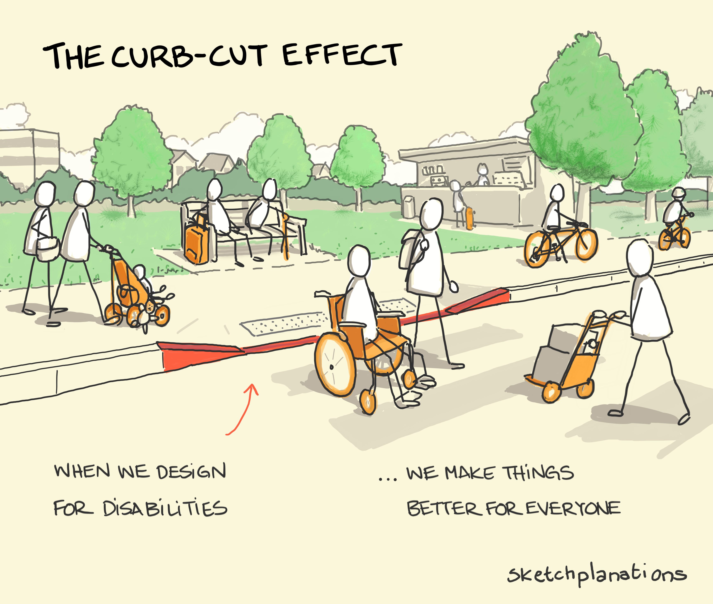

Content from What Makes a Good Teacher?
Last updated on 2024-04-24 | Edit this page
Estimated time: 30 minutes
Overview
Questions
- How do you identify an effective instructor?
Objectives
- Identify your own subjective view on the qualities of effective and ineffective instructors
- Consider which of these qualities were the same vs different across the group
Give students five minutes to think and write, then spend ten minutes going over answers. Make a note of what experiences were shared vs which ones were unique.
An Incomplete List
It’s likely that your favorite teacher:
- was well-prepared to teach their subject;
- shared a clear pathway for what and how they wanted you to learn;
- taught a subject that was interesting or useful for you;
- made you feel actively engaged in the learning process;
- made you feel challenged but not overwhelmed;
- gave you space to ask questions or challenge them;
- made you feel safe;
- didn’t shame you for lack of knowledge;
- was responsive to your needs;
- wasn’t condescending;
- assumed that you had potential;
- acknowledged your growth;
- provided kind and useful feedback.
Our goal over the next two weeks is to equip you with foundational knowledge and practice about learning and teaching. We hope that these first steps will set you up well to grow as an instructor in the years to come.
It’s Okay If You Don’t Like Teaching
There are many people who love teaching and want to be in the classroom, but who have not yet learned the skills to teach effectively. On the flip side, there are people who do not have a particular passion for teaching, but who are still excellent instructors. These people have learned the techniques and practices of effective instruction. Even if you never love teaching, you can employ the skills you’re about to learn to provide the best possible experience for both you and your students.
Key Points
- As an instructor, you are responsible for creating a safe and engaging learning environment for course participants
- There are many different types of great instructor, but some features are shared
- The coming weeks will teach you foundational teaching skills, while giving you space to practice and find your own educational voice.
Content from Group Project Details
Last updated on 2024-04-26 | Edit this page
Estimated time: 12 minutes
Overview
Questions
- What will we be working towards over the next two weeks?
Objectives
- Have all the necessary software downloaded to run both R and Python from RStudio
- Understand the expectations for the end-of-workshop live coding sessions.
Group Work Details
This workshop will teach you how to design and execute on a curriculum from start to finish. Over the course of the coming week, you will learn how to identify your target audience, determine what content to teach, and create an assessment-based curriculum for that content. Because much of our work involves programming, you will also learn how to effectively teach using the live coding method. You should have formed yourselves into groups of three– is anyone not part of a group yet?
Over the course of the workshop, when you see a section labeled Group Work, it’s a sign for you to assemble with your group members to develop a new part of your curriculum.
On Thursday and Friday of next week, each group will take us through their lesson. You will have 30 minutes total to introduce your topic, teach it with live coding, and deliver a brief assessment. Afterwards we will have 10 minutes of feedback before moving on to the next group. This is a short amount of time, so the topic of your curriculum must be very concise. We will work together to pick an appropriate topic for each group.
Todo: move the below to a section about tech troubles
Running Python from RStudio
This is a mixed course, with participants who are most comfortable in either Python or R. In order to run R scripts, everyone should have downloaded and installed R and RStudio yesterday. And luckily, RStudio can also function as a development environment for Python, so we shouldn’t need to download Python separately. What we will need to do is install the R package that will help us run Python, as well as a few Python packages.
reticulate
You can run Python code from an R session using an R package called
reticulate. Make sure you have reticulate
installed, either using the GUI or by running
install.packages("reticulate") from the RStudio
console.
Now, open a new R script and name it “install_python_packages.R”. On
the first line, type library(reticulate).
Python packages
Like R, Python has a robust system of libraries that need to be
installed and loaded before they can be used. We can use our R script to
install these packages using the reticulate function
py_install().
On a lower line of your R script, type:
py_install(c("pandas", "seaborn", "matplotlib"))This should install the most commonly used data science and plotting packages used in Python. If you ever have trouble with a package loading, or you need to install a new package, we can come back and rerun or modify this script.
Note for Python Users
Even if you are a Python user who already has these packages
installed, you will need to install them again using py_install. This is
because reticulate creates a virtual environment to run
Python from R, so it doesn’t interfere with the instance of Python
running on your main machine.
Testing Your Installation
Now, open a new file, but instead of opening an R script, scroll down and create a Python script. Name it “test_install.py”. In the file, type the following code:
import pandas as pd
import seaborn as sns
import matplotlib.pyplot as plt
print("Hello world")Raise your hand if you run into any errors and we will work through them with you.
Content from A Growth Mindset for Learners and Instructors
Last updated on 2024-04-26 | Edit this page
Estimated time: 40 minutes
Overview
Questions
- What is a growth mindset?
- How do you practice a growth mindset as a instructor?
Objectives
- Model a growth mindset in the classroom.
- Provide feedback using the ASK guidelines.
- Accept feedback and critique with grace and thoughtfulness
Discussion: Art Project
Imagine that one day, a child draws a picture of a tree. He shows it to his older sister, his mother, and his aunt.
His older sister says, “That’s a terrible drawing, you’re bad at art.”
His mother says, “That drawing is perfect!! You’re an amazing artist!”
His aunt says, “This is so good! I love the details around the leaves. I bet it would look beautiful next time if you tried putting some darker shading behind the trunk.”
How do you think the child felt after receiving each of these three pieces of feedback?
How We View Ourselves Affects How We Learn
The exercise above showed people giving three different types of feedback. The sister gave harsh negative feedback, claiming that the child was categorically bad at art. The mother gave gushing positive feedback, claiming that the child was categorically good at art. The aunt gave some positive feedback, while also gently suggesting ways that the child might improve in the future.
The child’s mother and sister were both demonstrating what psychologist Carol Dweck calls a fixed mindset. This is the belief that ability or intelligence is born rather than made. The child’s aunt, on the other hand, was demonstrating the belief that ability can be acquired through effort– a growth mindset. Especially when learning something that feels complex or intimidating, a fixed mindset can interfere with motivation and growth in a number of ways, as laid out in this diagram:

It’s important for you to try and encourage a growth mindset in your learners, and the best way to do so is to embody a growth mindset yourself. Let’s go through a few common challenges instructors encounter and consider how we might bring a growth mindset to them.
Exercise: Teaching Troubles
How might someone with a fixed mindset respond to each of these common challenges? What about someone with a growth mindset?
- A learner asks you a question you don’t know the answer to.
- You’re doing a live coding demonstration, and your code throws an error when you didn’t expect it to.
- You’re helping someone write a few lines of code, but they’re a slow typer. It would be faster if you took their computer and did it yourself as they watched.
- A student is feeling frustrated and tells you, “I’m just no good at coding!”.
We’ll go into more detail about how to cultivate a growth mindset in the classroom next week. But for now, let’s spend a little time cultivating a growth mindset in ourselves by practicing giving and receiving feedback.
ASK for Feedback: Actionable, Specific, and Kind
There are many metaphors and acronyms designed to help people give good feedback. One of our favorites is called the ASK framework. It recommends that any feedback you provide to someone should be:
- Actionable: If you critique someone on something they have no power to change, your feedback has limited power to help them grow. Furthermore, they may wind up feeling demotivated, or even defensive. Stick to the possible.
- Specific: “Make it better” is actionable feedback, but it doesn’t really help guide someone towards a better product. It’s much more helpful to specify where, how, and why you’re recommending changes. For example, “I think the narrative is clearer if you switch these two paragraphs”, or “on line 76, you’re taking the median value of your data, but it would be more appropriate to take the mean”.
-
Kind: Even if you strongly dislike the thing you’re
critiquing, it’s likely that someone spent a lot of time and effort on
it. If you have ever had someone absolutely rip apart something
meaningful to you, you know how crushing it can be. Think about the
words you use. If you’re speaking to someone directly, think about your
body language and tone. Remember what it felt like the last time someone
was gentle with you. There are two sub-strategies that work well to
support kind feedback:
- Good news first: Start by talking about the aspects of the work you enjoyed, and acknowledging the effort that went into it. This helps the feedback receiver to feel secure and open to receiveing more critical comments.
- “I” statements: When you are, for example, reviewing a paper, sometimes it’s tempting to say “this section is confusing.” But you don’t actually know that for sure! It was confusing to you, but clearly it made sense to the person who wrote it, and maybe it would also make sense to someone else. When you give feedback, instead consider saying “I was confused by this section because…” and continue with actionable, specific feedback. This is both a more true reflection of your critique, and a kinder way of providing comments.
Ask to ASK
There’s another reason we love the acronym ASK for feedback: it reminds us that the giving of feedback should always be preceded by a question. Usually, someone asks you for feedback, but occasionally it’s also appropriate for you to ask someone if they would like your opinion. Ideally, requests to receive or give feedback should also follow the ASK protocol. For example, say “Hey, I made a figure for a paper but I’m not sure if it’s easy to understand, could you tell me what story this plot tells you?” instead of “What do you think of this plot?” This will help guide the feedback-giver toward the actual type of advice you’re hoping to receive.
Take a moment here with your co-instructor, where each of you asks for, and receives, ASK feedback.
Managing Discomfort
Even when feedback is actively solicited and given in the kindest possible way, it can feel terrible to receive. Many of us, especially those of us who grew up with a fixed mindset, often want our first try to be perfect. When someone gives us tips on how to improve, we can feel humiliated, defensive, and demotivated, because we have not lived up to the standard we set for ourselves.
The process of sitting with and moving past the discomfort that comes with feedback is a crucial component of developing a growth mindset. Everyone develops their own strategy to work through this. Here’s an example of how one of your instructors does it:
- For a few minutes, let myself feel whatever I need to. That person just didn’t understand me! What do they know anyway? Oh no, am I terrible at this? What if I’m never successful?
- Start to “reality test” those high-emotion thoughts. Do I really think the person who gave me feedback didn’t know what they were talking about? Do I really think that I’m bad at this, or am I proud of the effort I put in? Don’t I want to learn how to do better? Isn’t the only way to be successful to keep trying?
- When I’m ready, sit back down with the feedback and really think through it. What good points did this person make? What feedback can I respectfully decline? It’s usually at this point that I actually start getting excited about incorporating the feedback, because I can see how it will make my work stronger.
- Continue incorporating and refining the feedback. At this point I’m usually really happy and grateful that I asked for help. If I can, I’ll thank the person who gave me feedback. I might feel kind of silly for how I responded before, but I know that it’s a human response that will happen again. I trust myself to handle it appropriately next time it happens.
Exercise: Giving and Receiving Feedback
Choose something that belongs to you but you don’t feel very attached to, perhaps your backpack or your notebook or the font you’re using in your paper draft. (Do not select a body part or an article of clothing.) Using the ASK guidelines, ask the person sitting next to you to give you some feedback about the thing you’ve selected. Then switch and do the same for them.
How did this exercise make you feel? What was easy? What was surprisingly difficult?
Key Points
- A growth mindset helps provide an effective educational environment for you and your learners.
- When giving feedback, we should be Actionable, Specific, and Kind
- Feeling and managing discomfort is a common part of receiving feedback. Managing discomfort will help you accept feedback and grow from it.
Content from Lesson Design
Last updated on 2024-03-29 | Edit this page
Estimated time: 25 minutes
Overview
Questions
- What are the recommended steps to take when developing a new lesson?
- What lesson do you want to develop during and after this workshop?
Objectives
After completing this episode, participants should be able to…
- Explain the lesson design process we will be adopting for this course.
- Summarise the lessons that participants will be working on.
Note: This content was originally published in the Carpentries Collaborative Lesson Development Training
A Lesson Design Process
In order to design an effective lesson, we need a structured approach with the learner in mind and clearly identified goals. Throughout this training, we will use a modified version of Nicholl’s five phase paradigm for curriculum design1. Nicholls’ paradigm describes a process, commonly referred to as backward design, where those who wish to develop a new curriculum first begin by defining exactly what their learners will be able to do after they have completed the lesson/training/course. The subsequent stages of the curriculum design process involve designing content to directly meet those stated outcomes.
- Select learning outcomes
- Choose learning experiences to help learners achieve these outcomes
- Develop content to support these experiences
- Assess learner progress towards desired outcomes
- Evaluate chosen outcomes, experiences, and content based on this assessment

The last two phases of Nicholls’ paradigm involve assessing learner progress towards the desired learning outcomes and evaluating the stated objectives and current content in light of the results of that assessment. In The Carpentries, most workshops are relatively short-format, without room for an extensive assessment after the teaching has finished (a summative assessment). To account for this, our lessons place an emphasis on formative assessment: assessment of learner progress that takes place while the teaching is still going on, to give instructors opportunities to evaluate the teaching and lesson content before the end of the workshop.
To account for this, we have adapted Nicholls’ five phases in this training, to place an emphasis on assessing learning during a workshop:
- Define desired learning outcomes
- Design assessments to determine progress towards desired outcomes
- Write content to lead learners from one of these assessments to the next
- Assess learner progress towards outcomes during teaching
- (After the break) evaluate how closely the outcomes meet the objectives

Note the cyclical nature of this process: you will complete one iteration through this cycle during this training (though probably for a limited part of your lesson, rather than the whole thing). Note also that teaching the content is an essential intermediate step in the process: the importance of feedback gathered while teaching the lesson will be a common refrain throughout this training.
Your Lessons
This training will provide many opportunities for discussion of your lessons. Providing some context now for the lessons that you will be creating will help the Trainers and other participants get involved in those discussions and give you feedback as you follow the process.
Discussion (10 minutes)
Share your answers to the following questions in the shared notes, then discuss them with the Trainers, your collaborators, and the other participants.
- What is the topic of the lesson that you plan to develop based on this training?
- Have you created training material on this topic before?
- What is motivating you to create this lesson?
Trainees should have received the questions above in advance and arrived at the training with notes prepared. Where multiple trainees are working on the same lesson project, ask for a volunteer or call on someone to represent their team, leaving space afterwards for their team-mates to speak up if their answers differ.
The main objectives of this discussion are:
- to ensure that the members of each collaborative team share a common vision for the lesson they want to create
- to help Trainers and collaborators understand each trainee’s motivation for attending the training and building their lesson
Iterative Development
The Carpentries community develops open source lessons, which can always be updated and may never be finished. A lesson can undergo many iterations before it reaches a relatively stable state. To reflect this, we encourage lesson developers to indicate the status of their lesson by labelling its progress through a lesson life cycle:

Each life cycle stage indicates the level of maturity of a lesson:
- pre-alpha: a first draft of the lesson is still being constructed.
- alpha: the lesson has been/is being taught by the original authors, but has not been fully tested.
- beta: the lesson is ready to be taught by instructors who have not been significantly involved in its developed to this point.
- stable: the lesson has been extensively tested by the authors and others. It can be considered broadly complete and unlikely to undergo any drastic changes without warning.
Although your lessons will probably remain in pre-alpha throughout this training, some of the content will be equally valuable at later stages and we will also point you towards resources to help with testing the lesson and gathering feedback.
Content from Identifying Your Target Audience
Last updated on 2024-03-29 | Edit this page
Estimated time: 45 minutes
Overview
Questions
- Why is it so important to think about the target audience early in the process?
- How can you ensure that your lesson reaches the right audience?
Objectives
After completing this episode, participants should be able to…
- Describe the importance of aligning lesson design with the intended audience.
- Compose a list of prior knowledge required to follow a lesson.
Note: This content was originally published in the Carpentries Collaborative Lesson Development Training
Target Audience
Given the limited time in a short-format training, it is vital to define the scope of the lesson, i.e. what people need to know before and what they will know after the lesson. Thinking carefully about the target audience will help you with this and defining desired learning outcomes (the first step of the lesson design). Prominently displaying a description of the target audience will also help attract people with the right motivation and relevant prior knowledge to attend your workshops.
Expertise
One of the most important things we can identify about our target audience is the level of expertise they will already have in relation to the skills taught by your lesson. In The Carpentries Instructor Training curriculum, we describe three different stages of skill acquisition: novice, competent practitioner, and expert and how it directly correlates to the complexity of mental models these different groups have about a domain/topic.
Briefly, the novice is someone who does not know what they do not know, i.e., they do not yet know what the key ideas in the domain are or how they relate, the competent practitioner has enough understanding of the domain/topic for everyday purposes, and the expert is someone who can easily handle situations that are out of the ordinary and can immediately use their prior knowledge or skills when presented with a new problem in the domain.
When designing a new lesson, it is important to think about the level of expertise that you expect learners to arrive with for two reasons:
- It helps to predict what prior knowledge and mental
model learners will have of the lesson domain when they arrive. This
can enable you to make progress quickly by
- working to help learners recall (activate) that prior knowledge1,
- building on the conceptual understanding they already have2 and,
- perhaps most importantly, giving you some idea of what misconceptions they might arrive with. It is vital that misconceptions are identified and corrected early on, before learners try to incorporate new knowledge into a broken mental model. (More on this in Stay On Target.)
- People at different stages of this process need to be taught differently. For example, novices will learn more from lessons that include worked examples and are more tutorial-like i.e. focused on a specific task, with step-by-step explanations of the process, but without a lot of extra information that is not directly relevant. However, the same approach may actually hinder learning for competent practitioners who may be distracted by a step-by-step explanation of something they already have the prior knowledge of3. For learners at this level of expertise, lessons which include activities offering learners the freedom to explore options and develop their own solutions, are likely to be more effective.
Motivation
Furthermore, your lesson will be more effective if it aligns with the motivations of the target audience. Understanding the wants and needs of your target audience, what they know already and what kinds of problems they want to solve, will help you design a lesson that learners can see the value in. It will give them the impression that taking the lesson will be worthwhile (called positive expectancies in the literature).
We will look more at strategies to establish value and build positive expectancies in the next episode.
Be Specific
It can be tempting to identify a target audience only in vague terms, for example by writing that a lesson is aimed at “PhD students” or “early career researchers”. However, taking the time to focus on real people, or imagined personae, who represent your target audience will help you take time to consider the various aspects that can influence how much someone will learn from your lesson. It will also help you notice when the assumptions you are making about your target audience are unreasonable.
Most of all, it will help you stay connected to the fact that you are not your learners: they will arrive at the lesson with different priorities, interests, and challenges than your own.
At this point, it may be helpful to share [the template for a Lesson Design Notes document][design-notes-template] with trainees. They can make a copy of this document and fill in the lesson title now, then populate the document with the notes and information they produce throughout the training.
Exercise: thinking about target audience (15 minutes total for both parts)
Part 1 (all, 5 minutes): think about a member of the target audience for your lesson, and answer the following questions in the context of your lesson topic:
- What is their background?
- What do they already know how to do?
- What do they want to do with the skills they will learn from your lesson?
- What problem will your lesson help them solve?
Share your answers with your collaborators. How do they compare? If you have identified different audiences, are they compatible? Or would your time be better spent focussing on one particular audience for this lesson?
Write 1-2 diagnostic questions, for use before the lesson is taught, to help you assess whether a respondent falls within the intended audience for your lesson.
Thinking more about target audience
There is more to consider about your target audience than we could capture with only the questions listed above. In your own time, you should think more about the other considerations you might need to make when writing a lesson for your audience.
For example, what vocabulary do they use? The terms you are teaching in your lesson might have a different meaning in your learners’ domain of expertise, and it can be helpful to prepare for and try to avoid confusion arising from this clash. Furthermore, might their primary language differ from yours? If so, how might this change the way you write the lesson?
Defining Prerequisite Knowledge
A very common challenge encountered in workshops is heterogeneity of expertise among the audience. When learners arrive at a workshop with a wide range of previous experience with the topic, it is difficult for the instructors to keep everyone engaged. Those who arrive with too little relevant knowledge and experience can struggle to follow the lesson content at the pace you expect, while those who arrive with too much are likely to become bored and despondent as their expectation of learning new skills is not met.
One way to try to guard against this is to publish the description of your target audience when you advertise a workshop teaching your lesson, alongside a list summarising the skills and conceptual knowledge you expect learners to arrive with. Another is to use the information you have about your target audience to ask questions of potential learners when they apply/register to join the workshop (like the diagnostic questionnaire you may have prepared in the exercise above), and use the answers they give to filter out those who fall outside your intended audience.
While valuable, this kind of pre-assessment should be approached with caution: people are often bad at self-assessment i.e. estimating our own ability to perform a task4. We can try to mitigate for this when designing the questions for a pre-workshop survey, leaving little room for inaccurate self-assessment to confound the results. But experience suggests it is very difficult to ensure that every learner in a workshop falls within the intended audience of a lesson.
Exercise: defining prerequisite knowledge (5 minutes)
Write a list of the skills/knowledge your learners will be required to have before they can follow your lesson.
If you are struggling with this exercise because your lesson audience is novices, think about skills like touch typing, using a web browser, or interacting with a command line or graphical interface. These are skills commonly overlooked by experts and competent practitioners.
Key Points
- We recommend an iterative lesson design process that begins with identifying the target audience, before defining learning outcomes, then creating assessments, writing explanatory content, and evaluating the lesson in a workshop.
- Thinking about the target audience early in the design process helps to ensure that your lesson is built around the needs and motivations of real people.
- Use the description of your target audience to help attract people with the appropriate interests and prior knowledge to your lesson.
See chapter 1, How Does Students’ Prior Knowledge Affect Their Learning?, of Ambrose et al. 2010.↩︎
See chapter 2, How Does the Way Students Organize Knowledge Affect Their Learning?, of Ambrose et al. 2010.↩︎
Content from Building Skill With Practice
Last updated on 2024-04-23 | Edit this page
Estimated time: 60 minutes
Overview
Questions
- How do people learn?
- Who is a typical Carpentries learner?
- How can we help novices become competent practitioners?
Objectives
- Compare and contrast the three stages of skill acquisition.
- Identify a mental model and an analogy that can help to explain it.
- Apply a concept map to explore a simple mental model.
- Understand the limitations of knowledge in the absence of a functional mental model.
- Create a formative assessment to diagnose a broken mental model.
Note: This content was originally published in the Carpentries Instructor Training
We will now get started with a discussion of how learning works. We will begin with some key concepts from educational research and identify how these principles are put into practice in Carpentries workshops.
The Carpentries Pedagogical Model
The Carpentries aims to teach computational competence to learners. We take an applied approach, avoiding the theoretical and general in favor of the practical and specific. By showing learners how to solve specific problems with specific tools and providing hands-on practice, we develop learners’ confidence and lay the foundation for future learning.
A critical component of this process is that learners are able to practice what they are learning in real time, get feedback on what they are doing, and then apply those lessons learned to the next step in the learning process. Having learners help each other during the workshops also helps to reinforce concepts taught during the workshops.
A Carpentries workshop is an interactive event – for learners and instructors. We give and receive feedback throughout the course of a workshop. We incorporate assessments within the lesson materials and ask for feedback on sticky notes during lunch breaks and at the end of each day.
One reason why practice and feedback are so important is because a Carpentries workshop is not simply a source of information; it is the starting point for development of a new skill. To understand what this means, we will start by exploring what research tells us about skill acquisition and development of a “mental model.”
The Acquisition of Skill
Our approach is based on the work of researchers like Patricia Benner, who applied the Dreyfus model of skill acquisition in her studies of how nurses progress from novice to expert (see also books by Benner). This work indicates that through practice and formal instruction, learners acquire skills and advance through distinct stages. In simplified form, three stages of this model are:
-
Novice: someone who does not know what they do not know, i.e., they do not yet know what the key ideas in the domain are or how they relate. Novices may have difficulty formulating questions, or may ask questions that seem irrelevant or off-topic as they rely on prior knowledge, without knowing what is or is not related yet.
Example: A novice learner in a Carpentries workshop might never have heard of the bash shell, and therefore may have no understanding of how it relates to their file system or other programs on their computer.
-
Competent practitioner: someone who has enough understanding for everyday purposes. They will not know all the details of how something works and their understanding may not be entirely accurate, but it is sufficient for completing normal tasks with normal effort under normal circumstances.
Example: A competent practitioner in a Carpentries workshop might have used the shell before and understand how to move around directories and use individual programs, but they might not understand how they can fit these programs together to build scripts and automate large tasks.
-
Expert: someone who can easily handle situations that are out of the ordinary.
Example: An expert in a Carpentries workshop may have experience writing and running shell scripts and, when presented with a problem, immediately sees how these skills can be used to solve the problem.
Note that how a person feels about their skill level is not included in these definitions! You may or may not consider yourself an expert in a particular subject, but may nonetheless function at that level in certain contexts. We will come back to the expertise of the Instructor and its impact – positive and negative – on teaching, in the next episode. For now, we are primarily concerned with novices, as this is The Carpentries’ primary target audience.
It is common to think of a novice as a sort of an “empty vessel” into which knowledge can be “poured.” Unfortunately, this analogy includes inaccuracies that can generate dangerous misconceptions. In our next section, we will briefly explore the nature of “knowledge” through a concept that helps us differentiate between novices and competent practitioners in a more useful and visual way. This, in turn, will have implications for how we teach.
Building a Mental Model
Understanding is never a mirror of reality, even for an expert; rather, it is an internal representation based on our experience with a subject. This internal representation is often described as a mental model. A mental model allows us to extrapolate, or make predictions beyond and between the narrow limits of experience and memory, filling in gaps to the point that things “make sense.”
As we learn, our mental model evolves to become more complex and, most importantly, more useful. A useful model makes reasonable predictions and fits well within the range of things we are likely to encounter. While there will always be inaccuracies – or “misconceptions” – these do not interfere with day-to-day functioning. A useful model does not seize up or break down entirely as new concepts are added.
The power (and limitations) of analogies
Some mental models can be succinctly summarized by comparison to something else that is more universally understood. Good analogies can be extraordinarily useful when teaching, because they draw upon an existing mental model to fill in another, speeding learning and making a memorable connection. However, all analogies have limitations! If you choose to use an analogy, be sure its usefulness outweighs its potential to generate misconceptions that may interfere with learning.
Analogy Brainstorm
- Think of an analogy to explore. Perhaps you have a favorite that relates to your area of professional interest, or a hobby. If you prefer to work with an example, consider this analogy from education: “teaching is like gardening.”
- Share your analogy with a partner or group. (If you have not yet done so, be sure to take a moment to introduce yourself, first!) What does your analogy convey about the topic? How is it useful? In what ways is it wrong?
This activity should take about 10 minutes.
Analogies at Work: “Software Carpentry”
People often ask where our name came from. Greg Wilson has this to say:
“Brent Gorda and I came up with the name in 1998 to differentiate what we were teaching from software engineering. That’s about digging the Channel Tunnel; we’re about the computational equivalent of hanging drywall.”
The word “carpentry” acts as a metaphor – a type of analogy – inspiring a comparison with something concrete, hands on, practical, and useful. This clearly conveys the purpose of our organization: to support computational skill development among working practitioners who need the right tools and practices to be effective day to day.
A mental model may be represented as a collection of concepts and facts, connected by relationships. The mental model of an expert in any given subject will be far larger and more complex than that of a novice, including both more concepts and more detailed and numerous relationships. However, both may be perfectly useful in certain contexts.
Returning to our example levels of skill development:
- A novice has a minimal mental model of surface features of the domain. Inaccuracies based on limited prior knowledge may interfere with adding new information. Predictions are likely to borrow heavily from mental models of other domains which seem superficially similar.
- A competent practitioner has a mental model that is useful for everyday purposes. Most new information they are likely to encounter will fit well with their existing model. Even though many potential elements of their mental model may still be missing or wrong, predictions about their area of work are usually accurate.
- An expert has a densely populated and connected mental model that is especially good for problem solving. They quickly connect concepts that others may not see as being related. They may have difficulty explaining how they are thinking in ways that do not rely on other features unique to their own mental model.

Mapping a Mental Model
People often request to see more examples of concept maps. These are some examples linked from a previous version of the curriculum:
- Array Math
- Conditionals
- Creating and Destroying Files
- Sets and Dictionaries in Python
- Input and Output
- Lists and Loops
- Git Version Control
{kind=link}
{kind=link}
{kind=link}
{kind=link}
{kind=link}
{kind=link}
{kind=link}
Most of these are much larger than our recommended limit for the activity. It can be helpful to make a larger map and then narrow down to a smaller one.
Most people do not naturally visualize a mental model as a diagram of concepts and relationships. Mental models are complicated! Yet, visual representation of concepts and relationships can be a useful way to explore and understand hidden features of a mental model.
There are certain ways in which you may routinely use visual organizers, such as flow charts or biochemical pathway diagrams. A more general tool that is useful for exploring any network of concepts and relationships is a concept map. Pioneered for classroom use by John Novak in the 1970s, a concept map asks you to identify which concepts are most relevant to a topic at hand and – critically – to identify how they are connected. It can be quite difficult to identify and organize these connections! However, the process of forcing abstract knowledge into a visual format can force you to name connections that you might otherwise have quietly assumed, or illuminate gaps that you may not have been aware of. Especially where analogies are not available, concept mapping can help you to make your mental model of a concept more clear to yourself or others.
As an example, consider a mental model of the relationship between a small ball and water in a full glass.
The concept map below illustrates a simple mental model that a young child might develop after putting the ball in the water.

Give a child balls of three different sizes, and they might put together a somewhat more complex mental model, perhaps illustrated as:

Mapping a Mental Model
On a piece of paper, draw a simplified concept map of the same concept you discussed in the last activity, but this time without the analogy. What are 3-4 core concepts involved? How are those concepts related? (Note: if you would like to try out an online tool for this exercise, visit https://excalidraw.com .)
In the Etherpad, write some notes on this process. Was it difficult? Do you think it would be a useful exercise prior to teaching about your topic? What challenges might a novice face in creating a concept map of this kind?
This exercise should take about 5 minutes.
Misconceptions
The mental model above connects a ball to the water it can displace, recognizing that ‘more’ ball can move ‘more’ water. This mental model is perfectly functional for a child who wants to have fun splashing water around. It may endure in this way for several years of beaches and bathtubs.
However, when this child is asked to predict what would happen to the water if a ball were not bigger or smaller but heavier or lighter, they will naturally apply their existing mental model to the task. BUT…

What a surprise! The challenge presented by this new information is that it clashes with the pre-existing mental model, to which it seemed to apply. This prior knowledge needs to be adjusted to a new understanding that incorporates the difference between properties of mass and volume.

When mental models break, learning can occur more slowly than you might expect. The longer a prior model was in use, and the more extensively it has to be unlearned, the more it can actively interfere with the incorporation of new knowledge. Our child may quickly adapt to this new information if they had never thought much about mass before and were simply trying out an existing mental model on a new situation. However, if they had extensive experience with balls that were both larger and heavier (for example), it may take longer to unlearn what they thought they understood about mass.
Most mental models worth mapping are not so simple. Yet, forcing complex ideas in to this simplified format can be useful when preparing to teach, because it forces you to be explicit about exactly what concepts are at the heart of your topic, and to name relationships between them.
Types of Misconceptions
Correcting learners’ misconceptions is at least as important as presenting them with correct information. There are many ways of classifying different types of misconceptions. For our purposes, it is useful to consider 3 broad categories:
- Simple factual errors. These exist in isolation from any deeper understanding. These are the easiest to correct. Example: believing that Vancouver is the capital of British Columbia.
- Broken models. These occur when inaccuracies explain relationships and generate predictions (often successfully!) in an existing mental model. These take time to address, demanding that learners reason carefully through examples to see contradictions. Examples: believing that motion and acceleration must always be in the same direction, or that seasons are related to the shape of the earth’s orbit.
- Fundamental beliefs, which are deeply connected to a learner’s social identity and are the hardest to change. Examples: “the world is only a few thousand years old” or “human beings cannot affect the planet’s climate”. “I am not a computational person” may, arguably, also fall into this category of misconception.
The middle category of misconceptions is the most useful type to watch out for in Carpentries workshops. While teaching, we want to expose learners’ broken models so that we can help them begin to deconstruct them and build better ones in their place.
Using Formative Assessment to Identify Misconceptions
In order to effectively root out pre-existing misconceptions that need to be un-learned and stop quietly developing misconceptions in their tracks, an Instructor needs to be actively and persistently looking for them. But how?
Like so many challenges we will discuss in this training, the answer is feedback. In this case, we want feedback that allows us to assess the developing mental model of a trainee in highly specific ways, to verify that learning is proceeding according to plan and not careening off in some unpredicted direction. We want to get this feedback while we teach so that we can respond to that information and adapt our instruction to get learners back on track.
This kind of assessment has a name: it is called formative assessment because it is applied during learning to form the practice of teaching and the experience of the learner. This is different from exams, for example, which sum up what a participant has learned but are not used to guide further progress and are hence called summative.
Feedback from formative assessment illuminates misconceptions for both Instructors and learners. It also provides reassurance on both sides when learning is proceeding on track! It is far more reliable than reading faces or using feelings of comfort as a metric, which tends to be what Instructors and learners default to otherwise.
Formative Assessments
Any instructional tool that generates feedback that is used in a formative way can be described as “formative assessment.” Based on your previous educational experience (or even this training so far!) what types of formative assessments do you know about?
Write your answers in the Etherpad; or go around and have each person in the group name one.
This exercise should take about 5 minutes.
Formative assessments can serve many purposes other than hunting down misconceptions, such as verifying engagement or supporting memory consolidation. We will discuss some of these functions in later episodes. In this section, we are interested quite narrowly in evaluating mental models.
One example of formative assessment that can be used to tease out misconceptions is the multiple choice question (MCQ). When designed carefully, these can target anticipated misconceptions with surgical precision. For example, suppose we are teaching children multi-digit addition. A well-designed MCQ would be:
Q: what is 27 + 15 ?
a) 42
b) 32
c) 312
d) 33The correct answer is 42, but each of the other answers provides valuable insight.
- If the child answers 32, they are throwing away the carry completely.
- If they answer 312, they know that they cannot just discard the carried ‘1’, but do not understand that it is actually a ten and needs to be added into the next column. In other words, they are treating each column of numbers as unconnected to its neighbors.
- If they answer 33 then they know they have to carry the 1, but are carrying it back into the same column it came from.
Each of these incorrect answers has diagnostic power Each answer looks like it could be right: silly answers like “a fish!” offer therapeutic comedy but do not provide insight; nor do answers that are wrong in random ways. “Diagnostic power” means that each of the wrong choices helps the instructor figure out precisely what misconceptions learners have adopted when they select that choice.
Formative assessments are most powerful when:
- all learners are effectively assessed (not only the most vocal ones!) AND
- an instructor responds promptly to the results of the assessment
An instructor may learn they need to change their pace or review a particular concept. Using formative assessment effectively to discover and address misconceptions is a teaching skill that you can develop with reflective practice.
Handling Outcomes
Formative assessments allow us as instructors to adapt our instruction to our audience. What options do we have if a majority of the class chooses:
- mostly one of the wrong answers?
- mostly the right answer?
- an even spread among options?
Choose one of the above scenarios and compose a suggested response to it in the Etherpad.
This discussion should take about 5 minutes.
- If the majority of the class votes for a single wrong answer, you have a widespread misconception and can stop to examine and correct that misconception.
- If most of the class votes for the right answer, it is ok to explain the answer and move on. Helpers can make themselves available to assist anyone who still feels uncertain.
- If answers are pretty evenly split between options, learners may be guessing randomly, reflecting an absent mental model rather than a broken one. In this case it is a good idea to go back to a point where everyone was on the same page.
Designing a few MCQs with diagnostic power is useful when preparing to teach even if they are never used, for the same reason that concept mapping can be useful: it forces the instructor to think about the learners’ mental models and try to anticipate how they might be broken. In short, it helps Instructors to put themselves into the learners’ heads and see the topic from their point of view. We will talk more about the process of preparing to teach in a later episode.
The Importance of Going Slowly
It takes work to actively assess mental models throughout a workshop; this also takes time. This can make Instructors feel conflicted about using formative assessment routinely. However, the need to conduct routine assessment is not the only reason why a workshop should proceed more slowly than you think.
One key insight from research on cognitive development is that novices, competent practitioners, and experts each need to be taught differently. In particular, presenting novices with a pile of facts early on is counter-productive, because they do not yet have a model or framework to fit those facts into. In fact, presenting too many facts too soon can actually reinforce an incorrect mental model. (This is a key problem with the “empty vessel” analogy described earlier.)
Most learners coming to Carpentries lessons are novices, and do not have a strong mental model of the concepts we are teaching. Thus, our primary goal is not to teach the syntax of a particular programming language, but to help them construct a working mental model so that they have something to attach facts to. In other words, our goal is to teach people how to think about programming and data management in a way that will allow them to learn more easily on their own or understand what they might find online.
If our goal is to help novices construct an accurate and useful mental model of a new intellectual domain, this will impact our teaching. For example, we principally want to help learners form the right categories and make connections among concepts. We do not want to overload them with a slew of unrelated facts, as this will be confusing.
An important practical implication of this latter point is the pace
at which we teach.
In the first main episode of Software Carpentry’s lesson on the Unix
shell, which covers “Navigating Files and Directories”, there are
only four “commands” for 40 minutes of teaching. Ten minutes per command
may seem glacially slow, but that episodes’s real purpose is to teach
learners about paths; later on, they will learn about history,
wildcards, pipes and filters, command-line arguments, redirection, and
all the other big ideas on which the shell depends, and without which
people cannot understand how to use commands.
That mental model of the shell also includes things like:
- Anything you repeat manually, you will eventually get wrong (so let
the computer repeat things for you by using tab completion and the
historycommand). - Lots of little tools, combined as needed, are more productive than a handful of programs. (This motivates the pipe-and-filter model.)
These two examples illustrate something else as well. Learning consists of more than “just” adding information to mental models; creating linkages between concepts and facts is at least as important. Telling people that they should not repeat things, and that they should try to think (by analogy) in terms of little pieces loosely joined, both set the stage for discussing functions. Explicitly referring back to pipes and filters in the shell when introducing functions helps solidify both ideas.
Meeting Learners Where They Are
One of the strengths of Carpentries workshops is that we meet learners where they are. Carpentries Instructors strive to help learners progress from whatever starting point they happen to be at, without making anyone feel inferior about their current practices or skillsets. We do this in part by teaching relevant and useful skills, building an inclusive learning environment, and continually getting (and paying attention to!) feedback from learners. We will be talking in more depth about each of these strategies as we go forward in our workshop.
Key Points
- Our goal when teaching novices is to help them construct useful mental models.
- Exploring our own mental models can help us prepare to convey them.
- Constructing a useful mental model requires practice and corrective feedback.
- Formative assessments provide practice for learners and feedback to learners and instructors.
Content from Defining Lesson Objectives/Outcomes
Last updated on 2024-03-29 | Edit this page
Estimated time: 80 minutes
Overview
Questions
- How can describing the things you intend to teach aid the process of writing a lesson?
- How can you be specific and realistic about what you will teach in your lesson?
- What are some of the risks associated with unrealistic or undefined expectations of a lesson?
Objectives
After completing this episode, participants should be able to…
- Explain the importance of defining specific, measurable, attainable, relevant and time-bound objectives for a lesson.
- Evaluate a written lesson objective according to these criteria.
Note: This content was originally published in the Carpentries Collaborative Lesson Development Training

At this stage of the training, you should have a clear idea of who the target audience is for your lesson, and what knowledge, skills, and abilities you expect them to arrive with. Now it is time to consider the additional knowledge, skills, and abilities they will have by the time they leave: these are the learning outcomes of your lesson. It can feel strange to jump from one end of the process to the other like this, but clearly defining your goals early in the lesson development process is vital. As we will see in this episode, it helps you to determine the activities, examples, etc. that are appropriate for the lesson content, and provides a scope for what should and should not be included.
Why Focus on Skills?
To ensure your audience stays motivated, and your lesson feels relevant to them, we recommend that lessons focus on teaching skills rather than tools. Lessons should be centred around what you are empowering learners to do, what will be most beneficial to them, rather than a list of functions or commands you are teaching them to use. Placing the emphasis on skills over tools will help you prioritise key concepts and consider how your lesson can have the biggest impact on the way learners do their work.
Learning Objectives
The desired outcomes (the learning objectives) of a lesson should be new skills, i.e. things that the learner can do. For the vast majority of lessons, these will be cognitive skills: things learners can do with their minds. (Lessons intended to teach other kinds of skill, such as woodwork, playing a musical instrument, or making sushi, are probably better suited to a different platform than a static website.) Cognitive skills cannot be equally easily acquired: before we can apply concepts and create something new, we must attain the ability to remember and distinguish between new concepts. Remembering and distinguishing are also abilities that are often faster to gain then applying or creating.
We must try to be realistic about how far along this scale we can move learners during a single workshop/lesson. This is one reason why the target audience is so important: if we can predict what learners will know when they arrive at the lesson, we can better define the outcomes we can expect when they leave.
Defining objectives for a lesson is essential because it allows us to focus the rest of our time on developing content that is necessary for learners to reach these goals. It will help us ensure we do not miss anything important or, conversely, include anything superfluous that could use up valuable time or distract instructors and learners.
What Does an Objective Look Like?

Objectives can be defined for a lesson as a whole - what should learners be able to do at the end of a workshop teaching this lesson? - and for individual sections within it - what should learners be able to do after following this particular part of the lesson? The objectives for the current section of this training are:
These should be read as if they were endings to a sentence beginning
“At the end of this session, learners should be able to …”
Each objective starts with a verb and describes one (and only one) skill the learner will obtain.
For objectives to be as helpful as possible, they need to be written in a way that will allow us to directly observe whether or not a learner has attained the skills we want them to. This means that the skills described by our objectives should be measurable: as a general rule, action verbs such as “explain,” “choose,” or “predict,” are more helpful than passive verbs such as “know,” “understand,” or “appreciate”, which are hard to directly assess and are often open to interpretation.
A popular aid for defining learning objectives is [Bloom’s Taxonomy][blooms], which divides cognitive skills into several categories. The original taxonomy arranged these categories in a strict hierarchy, which has since been disputed. Regardless of whether these skills conform to such a hierarchy, Bloom’s Taxonomy serves as a very useful bank of action verbs for use in learning objectives.
We will see how helpful it can be to use action verbs in learning objectives when we begin talking about exercise design in the coming episodes.
SMART Objectives
To assist you in defining and writing learning objectives for your lesson, it can be helpful to turn to a popular framework for defining goals: SMART. Originally proposed to aid managers in the definition of business goals, and updated and adapted since to several other domains including education (see How to Write Well-Defined Learning Objectives for example1), the SMART acronym requires goals to be specific, measurable, attainable, relevant, and time-bound.
In the context of a lesson, SMART objectives should be:
- Specific: they should clearly describe a particular skill or ability the learner should have.
- Measurable: it should be possible to observe and ascertain when the learner has learned the skill/abilities described in the objectives.
- Attainable: the learner should realistically be able to acquire the skills or abilities in the time available in a workshop/by following the text of the lesson.
- Relevant: they should be relevant to the overall topic or domain of the lesson as a whole.
- Time-bound: they should include some timeframe within which the goal will be reached. For learning objectives, this is built into the approach described above.
Note that, for any lesson/curriculum that will be taught in a fixed amount of time, attainable and time-bound are overlapping: learning objectives for your lesson will answer the question “What will learners be able to do by the end of this lesson?” and the time available to teach the lesson, combined with the expected prior knowledge of your target audience, will determine how attainable they are.
You may find this template of a Markdown table useful to share with your trainees before they complete the next exercise.
MARKDOWN
| Objective | Action verb? | Specific | Measurable | Attainable |
|-----------|--------------|----------|------------|------------|
| 1 | | | | |
| 2 | | | | |
| 3 | | | | |Note: if you are using the [template CodiMD for notes][codimd-notes-template], you will find this template table for the exercise included there.
If you are using Etherpad for collaborative notes in your training, you can use the template table for Etherpad instead.
Exercise: evaluating learning objectives (15 minutes)
Look at the example learning objectives below. Fill in the table for each objective, checking off the cells if you think an objective meets the criteria or leaving it unchecked if not. You should assume each objective is for a lesson to be taught in a two-day workshop. Note down any observations you make as you move through the list. If you have time, try to imagine the titles of lessons that would have these objectives. This part of the exercise should take 10 minutes.
At the end of this lesson, learners will be able to:
- create formatted page content with Markdown.
- program with Rust.
- fully understand GitHub Actions.
| Objective | Action verb? | Specific | Measurable | Attainable |
|---|---|---|---|---|
| 1 | ||||
| 2 | ||||
| 3 |
In the last five minutes of the exercise, we will discuss as a group how each objective might be improved.
| Objective | Action verb? | Specific | Measurable | Attainable |
|---|---|---|---|---|
| 1 | ✅ | ❓ | ❓ | ✅ |
| 2 | ❓ | ❌ | ❌ | ❓ |
| 3 | ❌ | ❌ | ❌ | ❓ |
Objective 1 is the closest to what we ideally want in a lesson objective, but it illustrates how difficult it can be to make an objective truly specific. For example, a more specific and measurable version of this objective could be:
write links, headings and bold and italicised text with Markdown.
Lesson Scope
One of the major challenges of lesson design is choosing what to include in a lesson: what the main points will be, in what order they will be introduced, how much detail can be provided, and how much time can be spent on each point. Especially when writing lessons for short form training like a Carpentries workshop, difficult decisions often need to be made about what can and cannot be included. Trying to fit too much content into a lesson is counter-productive2, so it is good to avoid the temptation to cram in more content than you have time to cover properly.
Writing learning objectives is a good opportunity to begin thinking about this lesson scope, and can provide assistance when you are faced with a difficult decision about what content to cut out.
For instance, consider the order in which new skills must be acquired. Before learners can begin to acquire “higher-level” cognitive skills to perform creative and analytical tasks, they must first acquire the foundational knowledge and conceptual understanding of the domain. Furthermore, these higher-level skills take longer to acquire so, unless you can expect your target audience to arrive at the lesson with the relevant foundational knowledge and understanding, it is probably unrealistic to aim to have learners completing creative tasks before its end.
As should become clear through activities in the upcoming episodes, lessons can be broadly considered as blocks of content associated with a particular learning objective. This can be helpful when making choices about content to remove, because the task can be considered in the context of taking out whole learning objectives.
Defining Learning Objectives
We have discussed the importance of defining objectives early in the lesson design process, and looked at some examples of objectives written for other lessons. Now it is time to begin defining objectives for your own.
Here are some recommendations to help you get started:
- Aim for 3-4 objectives for every 6 hours your lesson will take to teach. (For example, this curriculum is designed to be taught in ~18 hours and has ten learning objectives.)
- These objectives are for your lesson as a whole: try to define the “end point” knowledge and skills you want learners to acquire. You can think of these as the things you would test in a fictional “final exam” your learners would be able to tackle.
- Later you will write “episode-level” objectives that should define intermediate steps towards the high-level objectives you identify for your lesson here.
Exercise: defining objectives for your lesson (20 minutes)
Write learning objectives for your lesson - what do you want learners to be able to do at the end of the workshop? When writing these lesson-level objectives, try to follow the SMART framework: make them specific, measurable, attainable, relevant, and time-bound.
Exercise: reviewing lesson objectives (15 minutes)
Swap objectives written in the previous exercise with a partner (you can also explain or show them what you wrote about your target audience, but this not essential) and review them with the following questions in mind:
- Are the objectives clear?
- Do they use “action” verbs?
- Could you directly observe whether a learner had reached this objective?
Now run the objectives through this Lesson Objective Advisor tool from the University of Manchester’s Faculty of Science and Engineering. Do the results match your assessment?
- Where do the skills described in these objectives sit on the scale?
- (optional) Are these objectives realistic, given the target audience of the lesson?
Advertising your lesson
These learning objectives, as well as the list of prerequisite knowledge you defined earlier, are very useful information to include when advertising a workshop that will teach your lesson. It will help people understand whether or not the event is a good fit for them, and manage their expectations about what they will learn if they attend.
Key Points
- Defining objectives for a lesson can help to focus your content on the most important outcomes, and outline the scope of the project.
- Following the SMART framework can help make your learning objectives as useful as possible.
- Leaving objectives unrealistic or undefined increases the risk of a lesson losing focus or spending time on activities that do not help learners gain the most important skills.
Content from Designing Assessments
Last updated on 2024-03-29 | Edit this page
Estimated time: 70 minutes
Overview
Questions
- How can you measure learners’ progress towards your lesson objectives?
- Why is it important to identify misconceptions as early as possible?
- Why should we create assessments before we have written the explanatory content of our lesson?
Objectives
After completing this episode, participants should be able to…
- Describe the importance of regular assessment while a lesson is being taught.
- Design assessments to identify the misconceptions learners might have during your lesson.
Note: This content was originally published in the Carpentries Collaborative Lesson Development Training

As we have seen previously, defining objectives for a lesson (or a teaching episode) can help to focus your content on the most important learning outcomes and outline the scope of your lesson project. The goal of the remaining steps of lesson development is to ensure that what learners learn from following your lesson matches its defined objectives as closely as possible. To do so, you need to develop assessments to monitor progression towards your learning outcomes.
Useful reading
Useful further reading: Course design: Considerations for Trainers – a Professional Guide.
Assessments
In order to measure progress and evaluate if and what learning occurred - we use various types of assessments:
- summative assessments - used to verify whether learners achieved the stated learning objectives after instruction.
- formative assessments - used to detect changes in learner performance during instruction, to provide feedback and insight into the learners’ developing mental models of the topic taught and to identify any old or developing misconceptions.
Summative assessments sum up what learning has been achieved after training (e.g. via exams). They give valuable data about learning attainment by individuals and entire cohorts but are not used to guide further progress. They may not be as suitable for short courses, but may be necessary for those that give marks/grades or certificates of completion.
Formative assessments are applied throughout a course and with several different purposes: they provide a way to move new information from working memory to long-term memory; they can inform instructors’ decisions about how to modify instruction to better promote learning; they also inform learners about changes they may need to make to improve their learning. Ideally, they should be used often (e.g. after every 15-20 minutes of teaching), providing opportunities to instructors to change pace and refocus learners’ attention. For short courses, formative assessments are usually more valuable and easier to implement in practice than summative assessments - they need not be complex or time-consuming, just informative enough about learning for both instructors and learners.
The most effective way to test learner understanding is to do such assessments in class - they engage all learners and allow instructors to check learners’ confidence with the content and its delivery, can help you deal with any potential misunderstandings as soon as they arise, and maximise the value of workshop for everyone. Such formative assessments also help with metacognition - the awareness a learner has that they are succeeding in learning something new.
Any instructional tool that generates feedback and is used in a formative way to check for learners’ understanding can be described as “formative assessment”. For example,
- reflection at the end of a session to help process learning - e.g. asking learners to write down things they learned, things they want to know more about and any questions they still have
- concept maps and diagrams - asking learners to reflect by drawing/labeling a concept map/diagram or writing down a list of new concepts and skills they’ve learned and (optionally) how they relate to one another or connect with previous knowledge
- checking in - gauging learners’ satisfaction and understanding using agreed signals (e.g. raising different coloured post-it/sticky notes or Zoom reactions to indicate that the pace is too fast/slow, that they completed/have not completed an exercise).
- think, pair, share - learners think about an answer to a question, pair up with a classmate to discuss their answer, and then share out the consensus they came to with the class.
Many other formative assessment tools can be found in Briggs’ list of “21 ways to check for student understanding” or Edutopia’s “56 Examples of Formative Assessment”.
Exercises are one important type of formative assessment. We will now have a look into exercises that perform misconception checks and ask students diagnostic questions; we will cover a few other types of exercises that help with retaining new knowledge in one of the later episodes.
Detecting Misconceptions
Detecting and correcting misconceptions and fixing learners’ incorrect/broken mental models is as important as presenting your learners with new knowledge and correct information. Why is it important to identify misconceptions as early as possible? When mental models are broken, learning can occur slower than you might expect1. The longer a prior incorrect model is in use, and the more extensively it has to be “unlearned”, the more it can actively interfere with the incorporation of the new correct knowledge (since it will contradict the misconceptions already present in the mental model).
Example Misconceptions
Everyday Life Example
An example misconception from everyday life (borrowed
from The Carpentries Instructor Training) is, knowing that a bigger
object (more volume) pushes out more water out of a basin than a smaller
object (less volume), assuming that the similar principle will apply for
objects of different weights. Surprisingly, heavier objects of the same
volume as lighter ones will not push out more water. 
Coding Example
Another misconception, sometimes encountered by people who are
learning programming languages such as R and Python having used
spreadsheets, is that variables in programs calculated by referencing
other variables in formulas will retain the connection and be updated
automatically when the referenced variables change. Variables in R or
Python programs can use other variables in calculations
(e.g. a = b + 3), but they do not behave like cells in
spreadsheets and updating the value of variable b after the
previous assignment will not change the value of a.
Copyright / Licencing Example
Misconceptions often arise around topics of copyright and licencing of work/content (e.g. data, software, written material). Copyright allows a creator to state that they own the work they have created. This declaration is optional - even if the creator does not explicitly assert it, copyright of the work exists from the moment of creation. A licence is a legal document which sets down the terms under which the creator is releasing what they have created for others to use, modify, extend or exploit. If this information is not provided, some will not reuse the work at all while others will assume they are free to do whatever they want with the work (as there is nothing to say that they cannot). This former is the correct assumption, even if this was not the intention of the copyright owner.
Exercise: misconceptions (5 minutes)
What are the common misconceptions learners can have about the topic of your lesson? How might you identify that misconception in your learners while they follow your lesson? Share your answer in the collaborative notes document.
Hint: Try thinking about related or common tools the learners might know and how applying that prior knowledge might lead to a misconception with the topic you are teaching.
Multiple Choice Questions (MCQs)
Multiple choice question (MCQ) exercises are types of a formative assessment that can help you target anticipated misconceptions. When designed carefully, each incorrect answer in a MCQ will have diagnostic power and provide valuable insight into how a mental model is broken. For example, suppose we are teaching children multi-digit addition. An example of a well-designed MCQ (borrowed from The Carpentries Instructor Training) in this case could be:
MCQ: What is 27 + 15?
- 42
- 32
- 312
- 33
The correct answer is 42, but each of the other answers provides a valuable insight:
- they do not understand the concept of a carry and are throwing it away completely
- they understand the concept of a carry and know that they cannot just discard the carried ‘1’, but do not understand that it is actually a ten and needs to be added into the next column - they are treating each column of numbers as unconnected to its neighbours.
- they understand that they need to carry ‘1’ but are adding it to the wrong column.
Their diagnostic power means that each of the wrong choices helps an instructor figure out precisely what misconceptions learners had adopted and in which ways their mental models are broken. As a result the instructor may decide to review a particular concept or change the pace of instruction. At the same time, learners get feedback about what they have misunderstood and what they need to focus their study efforts on - we call this guided practice.
Choosing Plausible Distractors
When using a multiple choice question for formative assessment, the incorrect answers you provide as options are at least as important as the correct answer because they offer the most useful insight into the mental model your audience is building. But choosing incorrect answers can be difficult, especially early in a lesson where you are more likely to encounter misconceptions that learners have arrived with as opposed to those they have picked up while following the lesson.
Prior Knowledge and Plausible Distractors
When identifying plausible distractors, it is essential to consider the prior knowledge you expect learners to have of your lesson topic.
The plausible distractors in the MCQ example above are chosen on the assumption that learners have been taught addition by “carrying” numbers: the incorrect answers are designed to diagnose misconceptions associated with that method.
However, as pointed out by Maneesha Sane, if a learner has been taught to add numbers by another method, e.g. first rounding them up or down to values that are more easy to remember and combine (e.g. 27 to 30), they might have misconceptions that cause them to arrive at an answer that is incorrect but not represented in the MCQ options.
Example MCQs
Coding MCQ
Thinking back of the misconceptions of how values are assigned, referenced and updated in programming languages, here is an example MCQ that can probe learners for such misconceptions.
MCQ: Look at the following 3 assignment statements in Python.
What is the result at the end of the above assignments?
- n = 300 and m = 300
- n = -100 and m = -100
- n = 200 and m = 300
- n = -100 and m = 300
The correct answer is d., while plausible distractors identify different misconceptions:
- they understand the value held by
nis now also held bymbut do not understand the value ofnhas been updated since the initial assignment (e.g. treating it as a constant). - they do not understand
nandmare separate variables/containers for values (which can hold the same values) but rather assume thatmis referencing variableninstead of copying its value at the time of assignment (e.g. behaving as a reference to another cell in a spreadsheet). - they think that the reassignment for
nactually subtracts100from the original value.
Copyright / Licencing MCQ
An example MCQ to check on people’s misconceptions around licencing and reusing other people’s work could be designed as follows.
MCQ: Which of the following statements are true and which are false?
- I don’t need permission because I am only using the copyrighted work
in educational or non-profit purposes
- I should always know the licence of any code, data, libraries,
pictures or other work that you reuse or redistribute
- Since I’m planning to give credit to the authors who created the
work I reuse, I do not have to worry about or need permission
- Material I obtain from the Internet is publicly accessible so no
explicit permission is required
- The work I want to use does not have a copyright notice on it, so it’s not protected by copyright and I’m free to use it
The correct answers are as follows:
- False - you always need an explicit permission from the creator to
use their work.
- True - you should make sure that you have the permission for all the
work that you are reusing, modifying or sharing.
- False - if you give credit to a work’s owner, that only means you
are not plagiarising other people’s work and claiming it as your own,
however that does not mean that you have the permission to use it.
- False - publicly accessible work is not the same the work in the public domain. The owner explicitly must put their work in the public domain but attaching the appropriate licence to it, before you can freely reuse it.
- False - the use of copyright notice is optional as copyright exists implicitly from the moment the work is created.
To help identify plausible distractors, you can think about problems or questions from previous training events and what people struggled with, think about your own misconceptions in the past, or ask colleagues about their experiences. It is important to consider [expert awareness gap][expert-awareness-gap-instructor-training], the phenomenon where experts in a topic forget what it is like not to have a good mental model of it. Observing how others learn your topic and asking colleagues to review lesson content as you design it can help mitigate this.
You should aim to create all your assessments before you have written the explanatory content of your lesson (recall Nicholl’s backward design). These assessments will guide your lesson design process by knowing exactly which knowledge you’d expect from your learners at any point in the lesson.
Exercise: designing a diagnostic exercise (20 minutes)
Create a multiple choice question (MCQ) that could be used in your lesson, to detect the misconception you identified above. As well as the correct answer, include 1-3 answer options that are not obviously incorrect (plausible distractors) and have diagnostic power i.e. each incorrect answer helps you pinpoint the exact misconception carried by the learner. Write down what misconception is being tested for each incorrect answer.
Share your MCQ in the collaborative notes document.
Exercise: reviewing formative assessments (10 minutes)
(this exercise will only work if participants have sufficient knowledge of their partner’s topic)
The Trainers will group you into pairs.
Review the MCQ designed by your partner. When providing feedback, try to answer the following questions:
- Is the question clear and easy to understand? Could the wording be improved in some way?
- Are the incorrect answers to the MCQ plausible distractors?
- Do the incorrect answers provide diagnostic power, to help an Instructor identify the misconception the learner has?
- Are there any incorrect answers missing i.e. are there other misconceptions that could be detected with this MCQ?
Share your feedback in the collaborative notes document.
Key Points
- The goal of lesson development is to ensure that the attained curriculum matches the intended curriculum as closely as possible.
- Assessments are a way to determine whether the objectives you defined for the lesson have been reached.
- Formative assessment happens during teaching and provides feedback both to an instructor and a learner - about progress and whether learning of new concepts occurred but also about any misunderstandings and misconceptions which can hinder further learning.
- It is important to detect misconceptions as early as possible and formative assessments (such as multiple choice questions) can help us with this.
See chapter 1, How Does Students’ Prior Knowledge Affect Their Learning?, of Ambrose et al. 2010.↩︎
Content from Crafting Lesson Content
Last updated on 2024-04-23 | Edit this page
Estimated time: 12 minutes
Overview
Questions
- How do you construct the content of your lessons, beyond objectives and assessments?
- What are the different types of lesson content? What are the pros and cons of each?
Objectives
- Recognize common types of lesson content
- Select which type of lesson is best-suited for their curriculum
- Construct their lesson content following the pedagogical principles of this training
Now What?
Types of Lesson Content
Content from Equity, Inclusion, and Accessibility
Last updated on 2024-04-23 | Edit this page
Estimated time: 40 minutes
Overview
Questions
- Why are equity, inclusion, and accessibility important?
- What can I do enhance equity, inclusion, and accessibility in my workshop?
Objectives
- Identify instructional strategies that are consistent with universal design.
- Recognize systemic factors that can distract and demotivate learners.
- Understand the role of The Carpentries Code of Conduct in maintaining an explicitly inclusive environment.
Note: This content was originally published in the Carpentries Instructor Training
A Positive Environment for All
As we have seen, there are many teaching practices that can make your workshop more positive and welcoming. However, no workshop occurs in a vacuum: everyone’s experiences begin and end and are influenced by the world beyond. In this section we will discuss some of the systemic barriers that can result in members of some groups being excluded even in an otherwise welcoming environment. The fact that some groups face barriers that others do not means we cannot take a one size fits all approach to creating a positive learning environment.
Definitions
This section addresses topics related to equity, inclusion, and accessibility. These terms are increasingly common and may be familiar to you, but not everyone understands or interprets them in the same way. So, we will start with a few working definitions, adapted from the University of Pittsburgh DEI Glossary:
Equity: The proportional distribution of desirable outcomes across groups. Sometimes confused with equality, equity refers to outcomes while equality connotes equal treatment.
Inclusion: Actively engaging traditionally excluded individuals and/or groups in processes, activities and decisions in a way that shares power. Inclusion promotes broad engagement, shared participation, and advances authentic sense of belonging through safe, positive, and nurturing environments.
Accessibility: Refers to the intentional design or redesign of technology, policies, products, and services (to name a few) that increase one’s ability to use, access, and obtain the respective item. Each person is afforded the opportunity to acquire the same information, engage in the same interactions, and enjoy the same services in an equally effective and equally integrated manner, with substantially equivalent ease of use.
The Carpentries Core Values
In 2019, The Carpentries formed a task force that worked with our community to identify 9 Core Values – things that we do, things that we are, and things that we champion. Many of these relate to equity, inclusion, and accessibility.
Discuss The Carpentries Core Values
- Take a moment to read through the Core Values on this page: https://carpentries.org/values/
- Choose one core value that resonates with you. What is a decision you might make in a workshop that could look different if you were actively considering the core value you chose?
This exercise should take about 5 minutes.
Accessibility
Barriers to accessibility encountered in a workshop are demotivating at best and can exclude a learner entirely. What barriers might be present in your workshop, and what can you do to remove them?
In your discussion of accessibility, it is helpful to point out that accessibility may not alway affect only individual learners, such as persons with disabilities. Geographic and social differences can present barriers to accessibility for entire groups. People in rural regions or institutions with unreliable electicity and internet access, for example, face extra barriers to participating in online Carpentries workshops, instructor trainings, and community events.
What Happens When Accessibility is an Issue?
Think of a time when you have been affected by, or noticed someone else being affected by barriers to accessibility. This may have been at a conference you attended where the elevator was out of service, or maybe a class you were taking relied on audio delivery of content. Describe what happened, how it impacted your (or someone else’s) ability to be involved and what could have been done to provide better accessibility in this case.
This exercise should take about 5 minutes.
While it may not be possible to anticipate all needs, it is possible to get a good working structure in place without any knowledge of what specific disabilities people might have. Having some accommodations prepared also demonstrates care, helping learners to trust that additional requests are likely to be well received.
If you are playing the host role (or part of it), note that our host template includes an inquiry regarding accessibility needs. However, be aware that many people will not feel comfortable requesting accommodations in advance, or at all if it can be avoided. For example, a participant who is hard of hearing may simply hope that instructors will speak loudly enough for them to hear. Taking steps to make your workshop maximally accessible can relieve your participants of the need to disclose personal information.
From Accommodation to Universal Design
Accommodation means changing things to serve an individual with a demonstrated need. However, accommodation puts the onus on the individual with the need to have to disclose their disability and ask for accommodations. Reluctance to do so is understandable: requests for accommodation are often met with negative emotions such as uncertainity, confusion, annoyance or anger by those receiving the requests.
By contrast, “universal design” means creating something to be maximally usable by all people without additional changes. A good example of universal design is curb cuts and sidewalk ramps. While they were originally created to make it easier for wheelchair users to move around, they proved to be equally helpful to people with strollers and grocery carts.
 Image: Sketchplanations
Universal Design in Learning (UDL)
In the 1990s, the Center for Applied Special Technology (CAST) brought Universal Design into Education with the Universal Design in Learning (UDL) Framework. UDL places responsibility for accessibility on the course designer rather than on the learner. It states that the most inclusive approach to education is to design instruction with diverse learners in mind from the beginning.
UDL is not about finding the one, best way to teach everyone. The key to UDL is creating redundancies such that learners have multiple options in how they:
- receive
- engage, and
- share information.
Activity: Applying Universal Design in Your Teaching
Consider some of the teaching tools and strategies we have discussed so far in this training, or others you have observed in your experience. How do these meet UDL goals of providing multiple options for learners?
Consider multiple ways for learners to:
- receive information
- engage with you, the material, and other learners
- share what they have learned
This exercise should take about 10 minutes.
Wherever possible, when considering whether or how to change your approach to universal design, make an effort to involve people with disabilities in decision-making. Carpentries communications channels can be a good place to ask for advice more broadly.
Every Little Bit Counts
Looking at people who work with disability and accessibility, it’s easy to be overwhelmed by all the different ways we could make instruction more accessible.
- It is ok not to do everything at once. We do not ask learners in our workshops to adopt all our best practices or tools in one go, but instead to add things gradually at a rate they can manage. Similarly, try to build in accessibility habits when preparing for workshops through reflective practice, adding something new each time.
- Do the easy things first. There are plenty of ways to make workshops more accessible that are both quick to accomplish and minimal in demands on attention: font choices, text size, checking in advance that your room is accessible via an elevator or ramp, etc.
For a short checklist of things to keep in mind for in-person workshop locations, see the accessibility checklist in The Carpentries Handbook. In particular, take note that the most frequent accessibility challenge noted in Carpentries post-assessment surveys is difficulty hearing an Instructor from the back of the room.
Accessibility Testing
Find the nearest public transportation drop-off point to your building and walk from there to your office and then to the nearest washroom, making notes about things you think would be difficult for a wheelchair user. Now borrow a wheelchair and repeat the journey. How complete was your list of challenges? And did you notice that the first sentence in this challenge assumed you could walk?
Systemic Exclusion
As Instructors, many aspects of our classroom environment are within our control or influence. However, the world is a complicated place, and there will always be extraneous factors that contribute to demotivation and add to cognitive load. These vary from person to person, but members of certain groups often carry a heavier load due to systemic forces that disproportionately impact them. What we can control, in this case, is our own awareness of the challenges these forces present to teaching and learning. As with other demotivation pitfalls, we can also think carefully about the language that we use and how we interact with our learners to avoid reinforcing systemic bias.
Stereotypes
We all use stereotypes, and for good reason. They serve a cognitive purpose. One study suggests we encounter more than 34 gigabytes of information every day. That is more information than we could ever process, so our brains use shortcuts. What an expert thing to do! Stereotypes are one of those shortcuts. As with other models, they are all wrong… but some are dangerous.
What are stereotypes?
Stereotypes are an established feature of human social cognition, in which a set of characteristics is associated with members of a group. Sterotypes:
- may be explicit (conscious and deliberate) or implicit (unconscious and automatic)
- guide what we notice about people
- guide how we interpret people’s behaviors
- can facilitate quick judgements in appropriate situations (e.g. stopping a child from driving a car)
- can lead to systematically negative attitudes and behaviors towards members of certain groups
Stereotypes are dangerous when they are explicit, but they are especially hazardous when they are implicit. This means that the people holding them may not be aware of them, even though their perceptions are guided by them.
When Instructors have stereotypes about learners, this may lead them to:
- call attention to differences unnecessarily
- give more or less attention to certain learners
- respond to questions differently for certain learners
When learners experience stereotypes about themselves, they may:
- develop a fixed mindset about aspects of their own capability
- experience increased cognitive load when reminded about a stereotype, interfering with the learning process. This is known as stereotype threat.
What can we do about our own stereotypes?
- Get to know people from many different groups!
- Observe your own behavior, and build awareness of situations in which your perceptions and behaviors are influenced by stereotypes.
- Avoid calling attention to common stereotypes, even in a way that seems positive.
Better Together
One way to support at-risk learners of all kinds is to ask people to sign up for workshops in small teams rather than as individuals when possible. If an entire lab group comes, or if attendees are drawn from the same (or closely-related) disciplines, everyone in the room will know in advance that they will be with at least a few people they trust, which increases the chances of them actually coming. Furthermore, if people attend a workshop with their labmates, it’s more likely they will work together to implement what they’ve learned after the workshop has ended.
Equity versus Equality
We can monitor our own use of stereotypes, but the experiences that people have before and after our workshop are beyond our control. Because these experiences are unequal, including historical and present-day differences in access to resources, mentorship, and other avenues towards career success, we aim to make Carpentries programs equitable. This means that, rather than offering the same access and experience to all, we aim to use our programs to actively counter-balance unequal opportunities that have led to disproportionate representation of certain groups in data-centric careers.
If you host a workshop, we encourage you to consider means of reaching out to historically under-represented groups in your community who may be interested in attending.
Inclusive Practices in a Carpentries Workshop
Setting Expectations with the Code of Conduct
One central way that The Carpentries fosters an inclusive, respectful learning environment is our Code of Conduct.
All participants in our workshops, activities and communities are required to abide by the Code of Conduct. This code helps to ensure that our community does not tolerate the persistence of behaviors that harm or exclude others. While such a code cannot prevent all incidents, reminding participants of the Code of Conduct supports them in being mindful of the impact of their words and actions. It also offers reassurance to all that the instructional team cares about their experience, creating an environment that is explicitly inclusive and supports safe focus on learning.
We will discuss the Code of Conduct in greater detail in Part 4 of this training during our discussion of Working with your team.
Listening with Assessment and Feedback
Motivating practices like those discussed in the previous episode to invite participation and encourage a growth mindset can also contribute to making a classroom more inclusive for diverse learners. However, we cannot assume that any instructional approach has succeeded at fostering inclusion if we do not listen to our audience. Explicitly seeking to learn from and attend to the concerns of your learners is key. If you find yourself feeling uncertain about whether you are successfully including all learners, this is a good time to pause and create an opportunity to listen.
When you are actively providing avenues for feedback, there are two signs of trouble to watch out for: negative feedback, and a lack of feedback. If an environment does not feel inclusive, many learners will not feel comfortable reporting this; indeed, they may not recognize it themselves. It can be difficult to notice the people you are not hearing from in a room! When in doubt, communicate with your team and work together to identify and (gently) check in with anyone you haven’t heard from. In addition, examine your feedback processes to be sure you are including opportunities for anonymous feedback.
Examining your Actions
When you pay close attention to your own actions, this can help you to do more than (painfully) identify how often you use the word “just”! Monitoring your actions can also provide you with useful information about the ways in which you behave differently with different people. This is normal! It is also an excellent way to identify patterns that may intefere with your intent to create an inclusive environment for all. Did you answer the same question in different ways at different points? If so, why? Who did you feel comfortable chatting with at break time, and who seemed harder to connect with? Did you offer help to anyone who didn’t ask for it? Who were you most eager to impress?
Asking yourself questions like these is hard! Answering them is harder. When you notice things that trouble you, keep a positive and simple goal in mind: to learn and to improve.
Looking for More? Want to Contribute?
The Carpentries is actively working on improving our content and practices with respect to equity, inclusion, and accessibility. If you are interested in being involved in the development of this content, please let us know! Contributions to this page may be made on GitHub (click the “improve this page” link at the top), though our #accessibility channel on The Carpentries Slack, or by emailing team@carpentries.org.
Content from Finish Week 1
Last updated on 2024-03-29 | Edit this page
Estimated time: 15 minutes
Overview
Questions
- What have we learned so far?
Objectives
After completing this episode, participants should be able to…
- Identify some actions that can be taken to build a strong foundation for a lesson.
Up to now, we have focused on some good practices for designing a lesson, and provided opportunities to implement these practices. We also progressed through the first stages of building a lesson website with The Carpentries Workbench.
When we return, we will continue to build on the foundations and complete the initial development of some parts of these new lessons. We will also explore the importance of teaching as an intermediate step in the lesson development process, and discuss how best to prepare to teach new lesson content.
Feedback & questions (5 min)
The Trainer(s) will ask for feedback on the training so far. Take some time to provide this feedback, before moving onto the second part of this task.
In the shared notes document, write down any questions you have after this first part of the training, that you hope will be answered before the end.
Reflection exercise (5 min)
Take some time to think back on what has been covered so far, then make some notes on the most important points and actions you want to take away from that. The Trainers and other participants will not look at this - it is only for you.
If you do not know where to start, consider the following list for a starting point:
- draw a concept map, connecting the material
- draw pictures or a comic depicting one of the concepts covered
- write an outline of the topics we covered
- write a paragraph or “journal” entry about your experience of the training today
- write down one thing that struck you the most
Content from Expertise and Instruction
Last updated on 2024-04-23 | Edit this page
Estimated time: 45 minutes
Overview
Questions
- Does subject expertise make someone a great teacher?
- How are we (as Instructors) different from our learners and how does this impact our teaching?
Objectives
- Explain what differentiates an expert from a competent practitioner.
- Describe at least two examples of how expertise can help and hinder effective teaching.
- Identify strategies for becoming aware of your expert awareness gap.
- Demonstrate strategies for avoiding dismissive language.
Note: This content was originally published in the Carpentries Instructor Training
Examining Your Expertise
In the last episode, we discussed the transition from novice to competent practitioner through formation of a functional mental model. We now shift our attention to experts. The expert we want to talk about is you!
Even if you do not yet think of yourself as an expert, you may nonetheless have advanced to the point where some of these key characteristics – and potential pitfalls – apply to you. We will discuss what distinguishes expertise from novices/competent practitioners, how being an expert can make it more difficult to teach novices, and some tools to help instructors identify and overcome these difficulties.
What Makes an Expert?
An earlier topic described a key difference between novices and competent practitioners. Novices lack a mental model, or have only a very incomplete model with limited utility. Competent practitioners have mental models that work well enough for most situations. How are experts different from both of these groups?
In reviewing the answers to the question above you will find that the expert experience amounts to much more than just knowing more facts. Competent practitioners can memorize a lot of information without any noticeable improvement to their performance. So, what makes an expert? The answer is that experts have more connections among pieces of knowledge that help them think and problem-solve quickly; more “short-cuts”, if you will.
This brings us back to our mental model diagrams, where facts are nodes and relationships are arcs. The greater connectivity of a mental model allows experts to:
- see connections between two topics or ideas that no one else can see
- see a single problem in several different ways
- know how to solve a problem, or “what questions to ask”
- jump directly from a problem to its solution because there is a direct link between the two in their mind. Where a competent practitioner would have to reason “A therefore B therefore C therefore F”, the expert can go from A to F in a single step (“A therefore F”).
We will expand on some of these below and how they can manifest in the way you teach.
Expertise and Teaching
Because your learners’ mental models will likely be less densely connected than your own, a conclusion that seems obvious to you will not seem that way to your learners. It is important to explain what you are doing step-by-step, and how each step leads to the next one.
Mind The Gap
The problem with this is that when you are used to going from A to F in a single leap, it can be very hard to remember that novices need to go through steps B and C before they can understand the connection between A and F. Experts are frequently so familiar with their subject that they can no longer imagine what it is like to not understand the world that way. This phenomenon is known in the literature as an expert blind spot.
Expert Awareness Gap
In The Carpentries, we aim to create an inclusive environment. We prefer to refer to this phenomenon as the expert awareness gap to be consistent with our objective to use inclusive language. It can be exclusionary to use a term that relates to a disability for other purposes. We introduce both terms, however, to help you as future instructors engage with these ideas in the literature and with people outside of The Carpentries community.
In evaluating potential terms, one instructor provided the following thoughts:
I like expert awareness gap because it is more precise than blind spot (it is not about seeing, but about noticing) and feels more of a surmountable challenge than a disadvantage. To me a disadvantage can sometimes feel like a thing that exists as a fact, like an inevitable consequence, but a gap is a thing to be bridged– and we certainly want instructors to try to overcome (or mitigate) their expert awareness gap
Awareness gaps can lead to some interesting reversals in the classroom. While deep expertise in a subject area can be valuable when teaching, it can also create obstacles that must be overcome with practice. People with less expertise, who still remember what it is like to have to learn the things, can be better equipped to anticipate novice misconceptions compared with an expert who has not learned to identify their awareness gaps.
What does this mean for you? If you have deep expertise in the subject you are hoping to teach, listen carefully to your learners, and seek out less-expert colleagues to discuss your teaching plans. If, on the other hand, you still feel new to your subject area – perhaps you even feel a little tentative about whether you are “expert enough” to teach – take heart! Your explanations may be more likely to meet novice learners where they are.
Awareness Gaps
- Is there anything you are learning how to do right now? Can you identify something that you still need to think about, but your teacher can do without thinking about it?
- Think about the area of expertise you identified for yourself earlier. What could a potential awareness gap be?
This exercise should take about 5 minutes.
Switching Language
If you worked in the USA in the same building as something called a “delicatessen”, you might invite a friend to meet you at “the deli” or simply at “the restaurant” and expect them to know what you mean, because you naturally use these terms interchangeably. Yet, someone less familiar with US English might hesitate, wondering if these words mean the same thing, or close enough, under the circumstances. Similarly, in a Carpentries workshop, an Instructor may start a workshop talking about “Unix”, but then automatically start using words like “Bash” and “shell” without noticing that learners are struggling to figure out how these two new words are related.
Novice learners can be confused by interchangeable use of more than just vocabulary. In programming, multiple forms of notation may be used to reference a column in a data frame, for example, with the same effect. Instructors may use absolute file paths in one place, then default to relative file paths elsewhere without noticing that explanation is required. Or, they may assume that a learner who has an absolute file path will be able to navigate to the file in a GUI.
What do you use interchangeably?
In the Etherpad, share an example of words or notation that you sometimes use to accomplish or refer to the same thing. If possible, try to think of an example that might occur in a Carpentries workshop.
Building awareness of how you can represent the same concept in multiple different ways will help you avoid doing so without explanation while teaching.
This exercise should take about 5 minutes.
What Problem?
Experts are also better at diagnosing errors than novices or competent practitioners. If faced with an error message while teaching, an expert will often automatically diagnose and solve a problem before a novice has even finished reading the error message. Because of this, it is very important while teaching to be explicit about the process you are using to engage with errors, even if they seem trivial to you, as they often will.
Diagnosis
What is an error message that you encounter frequently in your work? (These are often syntax errors.) Take a few minutes to plan out how you would explain that error message to your learners. Write the error and your explanation in the Etherpad.
This discussion should take about 5 minutes. (Optionally, this may be discussed in group breakouts, adding 5 minutes.)
“Just” and Other Dismissive Language
Instructors want to motivate learners! We will talk more about motivation in a later episode. But here, we will take a moment to recognize one ineffective strategy often deployed by experts who want learners to believe that a task is as easy as they think it is. This often manifests in using the word “just” in explanations, as in, “Look, it is easy, you just… (wave magic wand with undecipherable incantations)” This language gives learners the very clear signal that the person helping them thinks their problem is trivial and that there must be something wrong with them if they do not experience it that way.
With practice, we can change the way we speak to avoid dismissive language and replace it with more positive and motivating word choices.
Changing Your Language
- What other words or phrases, besides “just”, can have the same effect of dismissing the experience of finding a subject difficult or unclear?
- Propose an alternate phrasing for one of the suggestions above.
Write your examples and alternatives in the Etherpad.
This exercise should take about 5 minutes.
It is hard to break the habit of trying to convince learners that a task is “easy”! A few alternatives might include statements like:
- “This task will become really easy once you have learned how to do it.”
- “We only need to learn two new commands to accomplish the next task.”
- “This task may feel like it will take you all year to learn, but in my experience it will take you a lot less time than that to master it.”
“Any Questions?”
Another well-intended move that can go wrong in the presence of awareness gaps is the call for questions. An Instructor may accidentally dismiss learner confusion by asking for questions in a way that reveals that they do not actually expect that anyone will have them. Asking, “Does anyone have any questions?” implies that most people will not; the shorter the wait time before moving on, the more this implication is magnified. Instead, consider asking “What questions do you have?” and leaving a healthy pause for consideration. This firmly establishes an expectation that people will, indeed, have questions, and should challenge themselves to formulate them.
You Are Not Your Learners
As you seek to re-acquaint yourself with the novice experience, it can be tempting to think back to your own experiences getting started in programming. Trips down memory lane can be productive! However, it is important that you take care not to generalize from your experience to that of your novice learners.
We will talk more about knowing your audience in a later episode. For now, here are two points to keep in mind when contemplating the learner experience
- In most cases a researcher’s primary goal is not to learn programming, but to do better and more efficient research. They may not wish to take the time to learn how fundamental syntax or data structures work, or to learn any ‘fun facts’ that are not strictly necessary; they just want to know how to get their work done. This does not mean they never will be interested – maybe this is how you got your start, too! But if you began with an interest in programming, keep in mind that this can make their learning experience very different from yours.
- Some researchers have avoided learning programming previously because they believe that the time investment will be excessive and will interfere with their other work. These kinds of beliefs can make their motivation to persevere more fragile than yours might have been when you got started.
The Carpentries Is Not Computer Science
Many of the foundational concepts of computer science, such as computability, are difficult to learn and not immediately useful. This does not mean that they are not important, or are not worth learning, but if our aim is to convince people that they can learn this stuff, and that doing so will help them do more research faster, they are less compelling than things like automating repetitive tasks.
Expert Advantages
As we have seen, the high connectivity of an expert’s mental model poses challenges while teaching novices. However, that is not to say that experts cannot be great teachers! Because of their well-connected knowledge, self-aware experts are well-poised to help students make meaningful connections, to confidently turn an error into a learning opportunity, or to explain a complex topic in multiple ways. Experts can be highly effective as long as they learn to identify and correct for their own expert awareness gaps. Whether or not you identify as an expert, we hope this episode has started you on the path toward developing that skill.
The Importance of Practice (Again)
How can you make sure that expert awareness gaps are not negatively affecting your workshop? Keep in touch with your learners through frequent formative assessment! If you stumble into an expert awareness gap, create confusion by using interchangeable terms, or accidentally discourage rather than inviting questions, formative assessment has the power to bring these problems to the surface. As you develop teaching skill, you may be able to avoid these pitfalls. Until then, becoming aware of when they occur will help you to keep their impact under control.
Content from Motivation and Demotivation
Last updated on 2024-04-23 | Edit this page
Estimated time: 60 minutes
Overview
Questions
- Why is motivation important?
- How can we create a motivating environment for learners?
Objectives
- Identify authentic tasks and explain why teaching them is important.
- Develop strategies to avoid demotivating learners.
- Distinguish praise based feedback on the type of mindset it promotes.
Note: This content was originally published in the Carpentries Instructor Training
Motivation Matters
Teaching and learning are not the same process. As we have seen, an instructor can make choices that facilitate the cognitive processes necessary for learning to occur. But any technique can fall flat when learners are not motivated. Worse, demotivation is contagious! Teaching or sharing a classroom with demotivated learners is not fun or rewarding. It can be tempting, especially for teachers facing burnout after strenuous and ineffectual effort, to blame learners for spoiling the classroom experience.
It is true that learner motivation is influenced by many factors well beyond the control of an instructor, including individual background and systemic forces. However, there are many things you can do to cultivate motivation in your classroom, and perhaps most importantly, to avoid doing harm to the precious drive your learners bring to the classroom on day one. In Carpentries workshops, most learners come eager to learn! You have the power to influence how they feel when they depart.
No two-day workshop can truly bring a total novice to the level of a competent practitioner. Carpentries workshops function in a context of self training, in which workshops offer vital tools and a map for learners to proceed on their own. Our workshops lower the barrier to entry and help learners to get off on the right foot. In this context, cultivating motivation to continue learning, and to carefully pursue best-practices in doing so, is arguably the most important outcome we can achieve.
This section discusses several ways that learners can be motivated (or demotivated!) by instructional content and approaches, and provides practice opportunities for you to become confident in motivating your learners.
How Can Content Influence Motivation?
People learn best when they care about a topic and believe they can master it with a reasonable investment of time and effort. Many scientists might appreciate the value of programming but believe that developing useful skills will take more time than they have available. This presents a problem because believing that something will be too hard to learn often becomes a self-fulfilling prophecy.
One way to combat this problem is to begin a lesson with something that is quick to learn and immediately useful. It is particularly important that learners see it as useful in their daily work. This not only motivates them, it also helps build their confidence in us, so that if it takes longer to get to something they find useful in a later topic, they will persist with the lesson.
Imagine a graph whose axes are labelled “mean time to master” and “usefulness once mastered”. Tasks that are quick to master and immediately useful should ideally be taught first; things in the opposite corner that are time-consuming to learn and have little near-term application should be avoided in our workshops.

Another way to think about the graph shown above is authentic tasks – real tasks performed by someone doing their work. If you can identify authentic tasks from your own work that could be useful to others, these examples will be highly motivating.
Actual Time
Any useful estimate of time must take into account how frequent failures are and how much time is lost to them. For example, editing a text file seems like a quick task, but most graphical editors save things to the user’s desktop or home directory. If a novice needs to run shell commands on the files they’ve edited, they often fail to navigate to the right directory without help. You will learn to anticipate these sorts of challenges as you chart your expert awareness gaps. As a result, your skill at estimating time to mastery will improve. If you are new to teaching, try to ask an experienced instructor for feedback before trying out a new exercise.
While we aim to begin workshops with motivating content, in practice this does not always occur. Workflow-based content like that taught in Data Carpentry workshops may start at the beginning of the workflow, for example. Even when a ‘motivating example’ is built in to the start of a workshop, technical problems like software installation can turn those precious first minutes into an experience of frustration and impatience. That is ok! What is important is to be mindful of times when your content is not motivating, and to strategize ways to re-engage learners (and yourself) using some of the other techniques in this section.
How Can You Affect Motivation?
In addition to teaching things that will make our learners’ lives easier and focusing on authentic tasks, there are a number of other strategies we can use to motivate learners when we teach.
Brainstorming Motivational Impacts
Think back to courses you have taken in the past and consider things that an instructor has said or done that you found either motivating or demotivating. Try to think of one example in each case, and share your example under the appropriate heading in the Etherpad.
This exercise should take about 5 minutes.
Invite Participation
Motivation is supported by active engagement. Participation allows learners to ask questions, resolving roadblocks quickly, and demonstrate knowledge, building confidence. It also facilitates learning! However, in a room full of strangers, most learners will not immediately feel comfortable speaking up, especially when they feel confusion or doubt. Creating a motivating classroom means inviting communication and reinforcing that invitation with an attentive response.
A few ways to invite participation are:
- Establishing norms for interaction. This can be done by creating procedures for communication, e.g. turn taking in discussions, passing around a ‘talking stick’, or encouraging quieter people to contribute. Having, discussing, and enforcing a Code of Conduct also provides a framework for positive communication to occur.
- Encouraging learners to learn from each other. Working in pairs, or “pair programming,” encourages learners to talk through their learning process, reinforcing memory and making it more likely that confusion will be expressed and resolved. This can also address challenges of varying background experience: asking more advanced learners to help beginners can maximize learning for both. In these cases, make sure the beginner is doing the typing!
- Acknowledging when learners are confused. Acknowledging and exploring confusion with kindness rewards learners for sharing vulnerable information. It also helps you examine your expert awareness gaps! Formative assessments can pinpoint misunderstandings. When learners see that others are confused, they are more likely to share their own uncertainties.
Encourage a Growth Mindset
People vary in their beliefs about the nature of intelligence and skill development. In academic environments, people are often praised as “talented” or having “high ability,” and may develop an identity around being a certain “type of person” who has inherent strengths or weaknesses.
The belief that ability or intelligence is born rather than made – dubbed a fixed mindset by Carol Dweck – may impact the learning process. Broadly, this is a continuing topic of research and debate in education communities. In the specific context of Carpentries workshops, we frequently encounter learners who believe that they are not “computational people,” and Instructors often report that this fixed mindset interferes with motivation to engage fully with the task of learning to program. We therefore recommend three types of interventions that have been shown to influence mindset, encouraging learners to believe that ability can be acquired through effort – a growth mindset.
- Positive error framing. Errors are inevitable when learning a new skill. However, learners will often interpret errors as indicators of inability – adopting a fixed mindset. Encouraging learners to understand errors in a positive way – as an opportunity to learn something they would have missed otherwise – reinforces a growth mindset and helps them to stay motivated. Be sure to discuss this with your helpers, since they are often the ‘first responders’ to learner mistakes.
Helping Learners Learn From Mistakes
A learner at your workshop asks for your help with an exercise and
shows you their attempt at solving it. You see they’ve made an error
that shows they misunderstand something fundamental about the lesson
(for example, in the shell lesson, they forgot to put a space between
ls and the name of the directory they are looking at). What
would you say to the learner?
In the Etherpad, describe the error your learner has made and how you would respond.
This exercise should take about 5 minutes.
- Presenting the instructor as a learner. We want our learners to have confidence in our qualifications, but it is easy to take this too far. Presenting yourself as a learner offers a relatable model, fostering a growth mindset and teaching a positive approach to the continuing challenge of learning. Using participatory live coding, our chosen method for teaching concepts, is very useful for this reason. It is common to make errors while coding. Embrace these with enthusiasm! Leveraging your own mistakes as opportunities can turn an awkward moment into a highlight of a lesson, demonstrating both problem-solving approaches and positive error framing. If you are unlucky and fail to make any useful mistakes, sharing stories about your learning process can help here, too.
- Praising effort or improvement, not performance or ability. Praise based on the quality of performance often feels like the highest praise because it goes straight to your identity as a person of intellect and skill. When faced with a fixed mindset (“I’m not a computational person!”), many well-intentioned teachers counter with another fixed mindset (“You ARE a computational person! You’re really good at this!”). However, this doesn’t prepare learners to interpret future obstacles as irrelevant to innate ability. Evidence suggests that learner perseverance is best supported in the long term by praising effort or improvement instead. If you are not convinced of this, consider the impact on the person sitting next to your target, who might overhear but not receive the same praise.
Choosing our Praises
Since we are so used to being praised for our performance, it can be challenging to change the way we praise our learners. Which of these examples of praise do you think are based on performance, effort, or improvement?
- That’s exactly how you do it – you haven’t gotten it right yet, but you’ve tried two different strategies to solve that problem. Keep it up!
- You’re getting to be really good at that. See how it pays to keep at it?
- Wow, you did that perfectly without any help. Have you thought about taking more computing classes?
- That was a hard problem. You didn’t get the right answer, but look at what you learned trying to solve it!
- Look at that - you’re a natural!
This exercise should take about 5 minutes.
- Effort-based.
- Improvement-based.
- Performance-based.
- Improvement-based.
- Performance-based.
- Leveraging the Power of “Yet”. A request for help might start with “I can’t ___” or “I don’t understand ___”. Depending on the attitude of the learner, these can sound like statements of fact rather than requests for help! Adding the word “yet” to the end of these sentences helps emphasize that being a novice is a temporary state, and encourages a growth mindset towards progress.
First, Do No Harm!
When learning a skill, we develop more than expert awareness gaps – we also develop Opinions about tools and methods, and sometimes base a professional identity around displaying technical expertise. Technical boasts, insults, and other showy moves can score points in conversation with fellow experts, but these present serious hazards in the classroom! Here are a few things you should not do in your workshop:
- Talk contemptuously or with scorn about any tool or practice, or the people who use them. Regardless of its shortcomings, many of your learners may be using that tool, and may have invested many years in learning to do so. Convincing someone to change their practices is much harder when they think you disdain them.
- Dive into complex or detailed technical discussion with the one or two people in the audience who clearly don’t actually need to be there. Reserve those conversations for breaks or follow-up emails.
- Pretend to know more than you do. People will actually trust you more if you are frank about the limitations of your knowledge, and will be more likely to ask questions and seek help. (Also see “Presenting the instructor as a learner,” above)
- Use the J word (“just”) or other demotivating words we talked about in a previous lesson. These signal to the learner that the instructor thinks their problem is trivial and by extension that they therefore must be deficient if they are not able to figure it out.
- Take over the learner’s keyboard. It is rarely a good idea to type anything for your learners. Doing so can be demotivating for the learner (as it implies you don’t think they can do it themselves or that you don’t want to wait for them). It also wastes a valuable opportunity for your learner to develop muscle memory and other skills that are essential for independent work.
- Express surprise at unawareness. Saying things like “I can’t believe you don’t know X” or “You’ve never heard of Y?” signals to the learner that they do not have some required pre-knowledge of the material you are teaching, that they don’t belong at the workshop, and it may prevent them from asking questions in the future. (For more on this see the Recurse Center’s Social Rules).
It can be difficult to avoid these demotivators entirely. Some people are so used to complaining about certain tools that they initially fail to realize they’re doing it while teaching. If you catch yourself doing this, you might find a way to walk it back, or consider how you might repair or improve your motivational efforts on your next interaction. Teaching yourself – and your helpers! – to avoid these types of comments takes practice, but is well worth the effort.
Not Just Learners
What we have not discussed yet is strategies to motivate the instructor. But why does your motivation matter?
- Learners respond to an instructor’s enthusiasm. The more motivated you are, the more motivated they will be!
- Instructors are learning to teach. This takes motivation, too! Deliberative practice, seeking feedback, and reflecting on mistakes in the context of your own busy work life is a challenge. What will keep you energized to stay engaged with your learning process?
- Carpentries Instructors teach because they want to. Whether you are truly volunteering your time or are fulfilling a role in a job you have chosen, teaching is something you came here motivated to do. Teaching can be an incredibly gratifying activity! Finding and preserving your own motivation through the many challenges ahead will make your journey as a teacher a more joyful one.
Why Do You Teach?
We all have a different motivation for teaching, and that is a really good thing! The Carpentries wants instructors with diverse backgrounds because you each bring something unique to our community.
What motivates you to teach? Write a short explanation of what motivates you to teach. Save this as part of your teaching philosophy for future reference.
This exercise should take about 5 minutes.
Content from Building Skill With Feedback
Last updated on 2024-04-23 | Edit this page
Estimated time: 20 minutes
Overview
Questions
- How can I get feedback from learners?
- How can I use this feedback to improve my teaching?
Objectives
- Describe three feedback mechanisms used in Carpentries workshops.
- Give feedback to your instructors.
Note: This content was originally published in the Carpentries Instructor Training
We use formative assessment of learners during workshops to help track learners’ progress and adjust our approach to teaching the content as needed. But formative assessment is not just for learners. As we will discuss in more detail later, teaching is also a skill that is improved through regular practice and feedback. We gather feedback from our learners at multiple points in the workshop and in different forms.
Surveys
Carpentries learners fill out a survey before attending and immediately after a workshop. These surveys include questions to help instructors get an idea of their attendees’ prior experience and backgrounds before the workshop starts. Using this information, instructors can start to plan how they will approach the materials and what level of exercises are likely to be appropriate for their learners.
You can preview the surveys your learners will take at the links below:
If you’d like have an overview of the questions asked in the surveys without having to go through all the questions, you can preview them in a text-format below:
When The Carpentries Workshop Administration Team sets up the surveys for your workshop, they will also send you a link to a dashboard with the results! Take care not to share this link with your learners.
- This link will take you to a dashboard displaying the last year of data for our workshop surveys so you can have an idea of what to expect for your workshop.
Survey links
The survey links above are only for you to preview the survey as part of Instructor Training. When you are teaching a workshop, make sure to share the links that gets generated on your workshop website. Doing so will ensure that you will receive all the survey results from your workshop participants.
Timing Matters
We have found that learners are much more likely to fill out the post-workshop survey while they are still at the workshop than they are after they leave the venue. At the end of a multi-day workshop, your learners’ brains will be very tired. Rather than trying to fit in another 15 minutes worth of teaching, give your learners time to complete the post-workshop survey at the end of your workshop. You will be helping them (with an opportunity to reflect), yourself (you will get more useful feedback), and The Carpentries (we improve our programs based on feedback, and our funders take pride in the success of our workshops, too).
Minute Cards
Before each long break, for example lunch or between days, we have learners complete minute cards to share anonymous feedback. At an in-person workshop, paper sticky notes double as minute cards, with the two different colors used for positive and constructive feedback. At an online workshop, this may be done by making a copy of our Virtual Minute Card Template on Google Forms. Other tools can work as well, but we do recommend making sure that feedback is private and anonymous. A public-facing sticky note board will receive different (and less useful) feedback.
Whatever method you use, you may wish to customize the prompt to elicit different types of feedback at each break.
Example positive prompts:
- One thing you liked about this section of the workshop
- The most important thing you learned today
- A new skill, command, or technique you are most excited about using
Example constructive prompts:
- One thing you did not like or would change about this section of the workshop
- One thing that is confusing / you would like clarification on.
- One question you have
During long breaks, instructors read through the minute cards and look for patterns. At the start of each half day, the Instructors take a few minutes to address commonly raised issues with the whole class. The non-teaching Instructor can also type answers to the questions in the Etherpad.
Be Explicit About Using Feedback
Learners are more likely to give useful feedback if they feel that their feedback is being taken seriously. Spending a few minutes talking about the feedback you got and being explicit about what changes you are making in light of that feedback will encourage learners to continue to give informative feedback throughout the workshop.
One-Up, One-Down
In addition to minute cards, we also ask learners to give us feedback at the end of each day using a technique called “one up, one down”. The instructor asks the learners to alternately give one positive and one negative point about the day, without repeating anything that has already been said. This requirement forces people to say things they otherwise might not: once all the “safe” feedback has been given, participants will start saying what they really think. The instructor writes down the feedback in the Etherpad or a text editor, but does not comment on the feedback while collecting it. The instructors then discuss this feedback and how they plan to act on it. Like with minute cards, be explicit about how you are responding to learner feedback.
Give Us Feedback
Write one thing you learned this so far in this training that you found useful on your blue sticky note, and one question you have about the material on the yellow. Do not put your name on the notes: this is meant to be anonymous feedback. Add your notes to the pile by the door as you leave for lunch.
Content from Live Coding is a Skill
Last updated on 2024-04-23 | Edit this page
Estimated time: 65 minutes
Overview
Questions
- Why do we teach using participatory live coding?
Objectives
- Explain the advantages and limitations of participatory live coding.
- Summarize the key dos and do nots of participatory live coding.
- Demonstrate participatory live coding.
Note: This content was originally published in the Carpentries Instructor Training
One of the cornerstones of The Carpentries teaching is live coding: instructors do not use slides to teach coding, but work through the lesson material, typing in the code or instructions, with the workshop participants following along. This section explains how it works, why we use it, and gives general tips for an effective participatory live coding presentation. We will finish this section by practicing ourselves and providing feedback for each other.
Why Participatory Live Coding?
We do not use slides in our lessons. Instead, instructors plug their laptop into the projector and work through the lesson, typing in the code, reformatting data, and talking as we go. This is called “live coding”. However, the instructor is not live coding in a vacuum. Importantly, learners are strongly encouraged to “code-along” with the instructor. We refer to the practice of having the instructor live code and the learners code along as “participatory live coding” or, less formally, ‘code-along sessions’.
Some advantages are:
- Watching a program being written is more compelling than watching someone page through slides that present bits and pieces of the same code.
- It enables instructors to be more responsive to “what if?” questions. Where a slide deck is like a railway track, participatory live coding allows instructors to go off-road and follow their learners’ interests.
- Lateral knowledge transfer: participatory live coding facilitates the transfer of tacit knowledge – people learn more than we realized we were teaching by watching how instructors do things.
- It slows the instructor down: if she has to type in the program as she goes along, she can only go twice as fast as her learners, rather than ten-fold faster as she could with slides.
- Learners get to see instructors’ mistakes and how to diagnose and correct them. Novices are going to spend most of their time doing this, but it is left out of most textbooks.
Some challenges are:
- It requires instructors to be able to improvise when things go wrong or when learners have questions not directly addressed in the text of the lesson.
- It can be hard for learners to listen and type at the same time, due
to the
split-attention effect we discussed earlier. This is why it is very important that instructors first explain what they are going to do, then say what they are typing as they type it, and then explain what they did again afterwards. - It may take a bit of practice for instructors to get used to thinking aloud while coding in front of an audience.
Live coding fits well into the practice-feedback model we have been discussing - by providing learners with continuous opportunities for practice (every time they type in a line of code) and continuous feedback (their code either works or fails with an error message). It is important to keep in mind, however, that feedback is not helpful if you cannot understand it. Many error messages are obscure and not written with novices in mind. Continue to use the strategies for error framing that we learned earlier to make sure this feedback is useful to learners.
Debugging as a skill – while learners may have negative associations with “mistakes” or “typos”, it may be useful to re-frame troubleshooting as the routine process of finding and fixing “bugs”.
Learning to parse error messages is an important step in developing debugging skills.
Intentional vs accidental errors - It can be useful to intentionally demonstrate common mistakes and error messages. Alternatively, mistakes made by the Instructor or learners can offer useful opportunities to learn about and positively frame errors.
Compare and Contrast
Watch this first participatory live coding demo video: https://youtu.be/bXxBeNkKmJE and this second demo video: https://youtu.be/SkPmwe_WjeY as a group and then summarize your feedback on both in the Etherpad. Use the 2x2 rubric for feedback we discussed earlier.
In the videos, the bash shell for loop is taught, and it
is assumed learners are familiar with how to use a variable, the
head command and the content of the
basilisk.dat and unicorn.dat files.
Note: Sometimes sounds in the room can be poor. Turning on closed captioning by pressing the cc button will improve the accessibility of these videos.
This exercise and discussion should take about 15 minutes.
The instructor will lead a discussion about the videos and your feedback on them, making sure that the points of the Top Ten Tips below have been made.
Top Ten Tips for Participatory Live Coding in a Workshop
- Stand up and move around the room if possible. This makes the experience more interactive and less monotonous. Use a microphone if one is available to make it easier for people with hearing difficulties to hear you.
- Go slowly. For every command you type, every word of code you write, every menu item or website button you click, say out loud what you are doing while you do it. Then point to the command and its output on the screen and go through it a second time. This slows you down and allows learners to copy what you do, or to catch up. Do not copy-paste code.
- Mirror your learners’ environment. Try to create an environment that is as similar as possible to what your learners have to reduce cognitive load. Avoid using keyboard shortcuts.
- Use your screen wisely. Use a big font, and maximize the window. A black font on a white background works better than a light font on a dark background. When the bottom of the projector screen is at the same height, or below, the heads of the learners, people in the back will not be able to see the lower parts. Draw up the bottom of your window(s) to compensate. Pay attention to the lighting (not too dark, no lights directly on/above the presenter’s screen) and if needed, re-position the tables so all learners can see the screen, and helpers can easily reach all learners.
- Use illustrations to help learners understand and organize the material. You can also generate the illustrations on the board as you progress through the material. This allows you to build up diagrams, making them increasingly complex in parallel with the material you are teaching. It helps learners understand the material, makes for a more lively workshop and gathers the learners’ attention to you as well.
- Turn off notifications on your laptop and phone.
- Stick to the lesson material. The core Carpentries lessons are developed collaboratively by many instructors and tried and tested at many workshops. This means they are very streamlined - which is great when you start teaching them for the first time. It may be tempting to deviate from the material because you would like to show a neat trick, or demonstrate some alternative way of doing something. Do not do this, since there is a fair chance you will run into something unexpected that you then have to explain. If you really want to use something outside of the material, try it out thoroughly before the workshop: run through the lesson as you would during the actual teaching and test the effect of your modification. Some instructors use printouts of the lesson material during teaching. Others use a second device (tablet or laptop) when teaching, on which they can view their notes and the Etherpad session. This seems to be more reliable than displaying one virtual desktop while flipping back and forth to another.
- Leave no learner behind. You will learn later in the training how sticky notes can be used to gauge learners’ progress and understanding.
- Embrace mistakes. No matter how well prepared you are, you will make mistakes. This is OK! Use these opportunities to do error framing and to help your learners learn the art of troubleshooting.
- Have fun! It is OK to use humor and improvisation to liven up the workshop. This becomes easier when you are more familiar with the material, and more relaxed. Start small, even just saying ‘that was fun’ after something worked well is a good start.
Read more in Ten quick tips for teaching with participatory live-coding
Practice Teaching
- Split into groups of three.
- Assign roles, which will rotate: presenter, timekeeper, note-taker.
- Have each group member teach 3 minutes of your chosen lesson episode using live coding. For this exercise, your peers will not “code-along.” Before you begin, briefly describe what you will be teaching and what has been learned previously. Do not record this exercise.
- After each person finishes, each group member should share feedback (starting with themselves) using the same 2x2 rubric introduced in part 2 The timekeeper should keep feedback discussion to about 1 minute per person; this may leave some time at the end for general discussion. The note-taker should record feedback in the Etherpad.
- Trade off roles.
This exercise should take about 25 minutes.
Content from Preparing to Teach
Last updated on 2024-03-29 | Edit this page
Estimated time: 65 minutes
Overview
Questions
- What can I do to prepare to teach my lesson for the first time?
- How should I communicate lesson setup instructions to learners?
- What information should be recorded for instructors teaching a lesson?
- How should information be collected as part of the feedback process?
Objectives
After completing this episode, participants should be able to…
- Summarise lesson content as a teaching plan.
- Add Setup Instructions and Instructor Notes to the lesson site.
- Create a feedback collection plan.
Note: This content was originally published in the Carpentries Collaborative Lesson Development Training

By now you should have developed objectives, exercises/formative assessments, and examples for at least one of the episodes in your lesson. In order to prepare to teach it (for the first time in particular) you’ll need to create a teaching plan and design a method to collect feedback on your lesson.
Teaching Plan
A teaching plan outlines the structure of your teaching session, including details, estimated duration and materials needed to deliver it. For example, a teaching plan may contain the following:
- welcome, introductions and motivation for the lesson - to introduce yourself, aims and objectives of the lesson and how it will help learners
- setup - to check if everyone is ready to proceed with the lesson
- segments of teaching and exercises from the lesson and any other planned activities (e.g. group discussions, wrap-up and feedback)
- checkpoints - places where you have planned to stop to check-in with learners
- slides, figures and other visual aids needed to deliver teaching and other parts of the teaching plan
- resources/references/recommended reading
Checkpoints in a Teaching Plan
Checkpoints are especially useful at the beginning of a lesson when you may not have as many exercises but the learners need to have the data downloaded or tool opened to be able to follow along. A checkpoint could include stopping to ask what questions learners have or having them indicate if they have completed the most recent step shown by the instructor.
Perspective on Preparing a Teaching Plan
“I usually create detailed notes organised in a concept map/workflow in order to make everything consistent. I also write next to each bit of teaching the time approximately needed. For each lesson I create (and reuse when I teach again the same lesson) very detailed notes of what happens during the lesson, including teaching goals and learning objectives I mean to achieve with each bit of lesson. This rich lesson plan requires a lot of work the first time I teach a lesson, but reduces a lot the preparation time of future lessons and are super useful to other teachers.”
- Dr. Allegra Via, Carpentries Instructor and Instructor Trainer
Figures and other visual aids are great tools to help participants understand the content being presented and make associations between pieces of information. The Instructor View of the lesson website includes a link in the top menu to Extract All Images, providing a single page containing all of the images in the lesson and their captions: this can be useful as an alternative to a slide deck when refering to figures and other visual aids during a workshop.
If your lesson requires participants to use any software, tools or
data - it is worthwhile investing time now into creating clear download,
installation and setup instructions for participants to follow and
circulating them ahead of the workshop. This will give you more time at
the pilot for teaching the lesson as troubleshooting setup problems on
the spot can be time-consuming and stressful. Each Carpentries lesson
has a dedicated place for setup instructions within The Carpentries
Workbench located in the file learners/setup.md off the
lesson project root.
Exercise: Add Setup Instructions (10 minutes)
Add setup instructions (in the learners/setup.md file)
with a list of software/tools/data needed by participants to follow your
lesson and links on how to obtain and install them.
Rather than producing a separate page in the lesson site, the
contents of learners/setup.md will be combined with
index.md to produce the Learner View of the landing page of
your lesson.
Another standard piece of The Carpentries Workbench are the
Instructor Notes pages - intended to help you and other
instructors deliver your lesson by providing useful tips for how to best
run a workshop or explain “sticky” points in the lesson. Instructor
Notes for your lesson are located in the
instructors/instructor-notes.md file off your lesson
project root where you may consider adding the following
information:
- rationale, strengths and/or weaknesses of the lesson design
- what has been tried before and what worked/did not work
- tips for teaching the lesson/particular episodes
- challenges encountered
- troubleshooting common setup/installation/exercise issues
- parts that seem to cause trouble or most confusion for learners (i.e. where to tread carefully, spend more time explaining)
It may initially be difficult to create Instructor Notes until you have taught the lesson yourself for the first time - but after the first pilot you will have enough feedback to draft them.
Feedback Collection Plan
There is a lot to collect feedback on when trialling a new lesson and this is arguably the most important part of your teaching plan. It can be hard to capture all this information yourself while you are teaching, hence you will need help from your team - make sure you assign the feedback collection roles ahead of your pilot. Additionally, when you are advertising your workshop, try and make it clear to the participants you are piloting a new lesson and that they will be actively helping you refine it as well as learning new things themselves. This can help focus their attention on the feedback you need to collect from them, which you should be doing:
-
constantly and throughout the workshop
- As notes taken by an observer/co-instructor - refer to the “Pilot Workshops” episode for suggestions on things to track and the [pilot workshop notes template][pilot-notes-template] and other suggested feedback collection mechanisms to help you gather such information.
- As “minute card” feedback from learners - minute cards are short comments from learners on what is working well and what could be improved, provided frequently (e.g. at the end of each session). Like exercises used as formative assessment, minute card feedback can be provided by learners while there is still time for instructors to act on it and adjust their approach. You may find the Virtual Minute Card template helpful for workshops run online, and the Instructor Training curriculum describes how sticky notes can be used at in-person events.
- at a designated wrap-up and feedback session at the end of the workshop. Here, you can cover any other feedback that was not addressed up to that point and any specific questions you may want to ask your audience (e.g. about the choice of topics for the lesson, difficulty level, workshop operations). You may design a special form that participants can fill in anonymously - here is a post-workshop survey template for workshops that pilot a lesson in The Carpentries Incubator. You can use it as a starting point for a post-workshop survey to be shared with your learners at the end of the pilot workshop and you can supplement it with additional questions.
Exercise: homework
The final part of this training will focus on the skills needed to collaborate effectively. Before that there will be a break, during which we would like you to complete the following three tasks:
- Teach one episode of your lesson (probably the one you have been working on in these two days). See the Lesson Trial Runs page for full details.
- After your trial run has concluded (immediately after, or when you
have reviewed any feedback you collected from learners), note down your
answers to the following questions:
- What worked?
- What did not?
- What will you do differently next time?
- What will you change in your material you taught? We will refer to these notes when we reconvene for the last episode of this training.
- Based on your experience teaching the material and the feedback you
received from your learners and helpers, make a list of issues you have
identified with the material you prepared, e.g.:
- examples that did not work as expected,
- improvements that could be made to exercises,
- parts that learners found particularly challenging,
- unexpected questions or misconceptions that came up during the trial run.
What questions do you have? (15 minutes)
The homework from this workshop includes a trial run of one of the episodes you have been developing in your lesson, to a real audience.
After reading the information provided about the trial run task and thinking about this task, what questions do you have about how you should approach teaching that trial run? Is there anything you are unsure of? What resources might help you prepare for that experience?
Key Points
- Spending time on preparing your teaching and feedback collection will make you and your participants get the most out of your workshop pilot.
- Creating clear setup instructions as part of your lesson and circulating them ahead of the pilot is time well-invested and will give you more time when teaching the lesson.
- Instructor Notes are teaching tips that you should include with your lesson to help you (a few months down the line) and other instructors, who have the relevant topic knowledge but have not been involved in the lesson design and development, deliver your lesson more successfully.